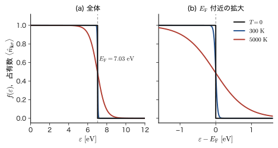
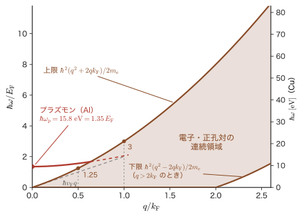
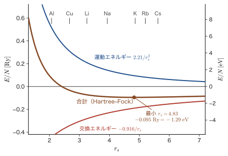
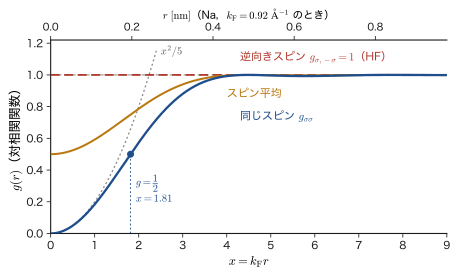
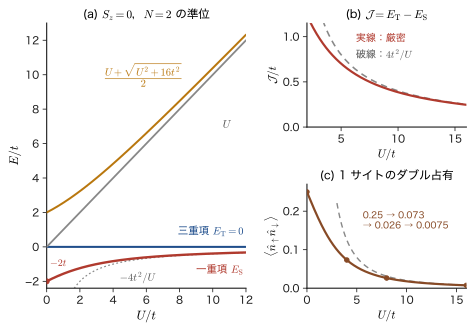
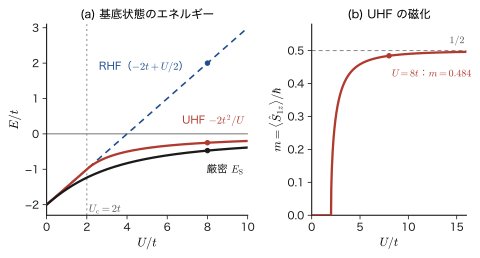

第59章電子ガスと Hubbard 模型 — Fermi 海・電子–正孔対・強い相関
銅線 $1\ \mathrm{cm^3}$ の中には，伝導に関わる電子が約 $8.5\times10^{22}$ 個ある．これだけの数の電子の波動関数 $\Psi(\bm{x}_1,\dots,\bm{x}_N)$ を，文字どおりに書き下して Schrödinger（シュレーディンガー）方程式を解くことは，もちろんできない．それなのに，金属の電気伝導，比熱，光沢，半導体の発光色，磁石になる物質とならない物質の違いは，電子 1 個 1 個の運動ではなく「電子の集まり」の言葉で，驚くほど簡単に理解できる．前の 3 つの章で，その言葉——第二量子化——を手に入れた．この章では，それを使う．電子が何個もある固体の問題を，生成・消滅演算子 $\hat{c}_{\bm{k}\sigma}^\dagger$，$\hat{c}_{\bm{k}\sigma}$ で実際に書いて解き，材料の性質（金属の電子のエネルギー，半導体の吸収端と励起子，磁性と絶縁体化）を数値で読み取る．
この章を貫く考え方は，基準になる状態を決め，そこからの「ずれ」を粒子の言葉で語ることである．電子が何個も入っている金属の基底状態は，エネルギーの低い軌道から順にぎっしり詰めた状態——Fermi 海 $\ket{\mathrm{FS}}$ ——である．この「海」を新しい真空のように見なすと，励起状態は，海から電子を 1 個持ち上げて，海に正孔（電子の抜けた穴）を残した「電子・正孔対」として書ける．電子の総数は変わらないのに，海の上の電子の数と海の中の正孔の数は，光を吸収すれば 1 個ずつ増え，再結合すれば減る．これは前の章（第56章）で見た「粒子の数が変わる過程」の，固体の中の姿にほかならない．半導体に光を当てて電子・正孔対を作る過程は，次の第60章で光子の演算子と組み合わせて，吸収と発光の全体像として完成する．
古典物理（AD 03）とのつながりと違いも確かめておこう．金属中の電子を古典的な気体（Drude 模型）だと思うと，室温 $300\ \mathrm{K}$ での電子の熱運動の速さは $\sqrt{3k_{\mathrm{B}}T/m_{\mathrm{e}}}\approx1.2\times10^{5}\ \mathrm{m/s}$ 程度のはずである．ところが Pauli の排他原理のために，$T=0$ でも電子は運動量の低い状態を「先着順」でふさいでいて，Cu の Fermi 面上の電子の速さは $1.57\times10^{6}\ \mathrm{m/s}$ と，約 13 倍も速い．この「絶対零度でも消えない運動」が，金属の性質の多くを決めている（本書の第10章 10.7 節と AD 03 第52章 52.8 節で，状態を数えて求めた $E_{\mathrm{F}}$ を，ここでは演算子の言葉で読み直す）．さらに，電子どうしには Coulomb 斥力がはたらく．その大きさは運動エネルギーと同程度なのに，自由電子の近似がそれなりに成立するのはなぜだろうか．その理由の一つが，Pauli の排他原理が生む交換エネルギーと「交換孔」，もう一つが Coulomb 力の遮蔽（と Fermi 面の近くでの散乱の抑制）である．この章では，前者を具体的に計算し，後者は結果を述べる．そして逆の極端として，電子が原子に局在して互いに避け合う物質では，わずかなホッピングとサイト内の Coulomb 斥力 $U$ だけからなる Hubbard 模型が，絶縁体・反強磁性・Mott 絶縁体という，1 電子のバンド理論では説明できない現象を与える．
- 自由電子ガスの基底状態 $\ket{\mathrm{FS}}=\prod_{\abs{\bm{k}}\lt k_{\mathrm{F}},\sigma}\hat{c}_{\bm{k}\sigma}^\dagger\ket{0}$ を書き，$k_{\mathrm{F}}=(3\pi^2n)^{1/3}$，$E_{\mathrm{F}}$，$v_{\mathrm{F}}$，$T_{\mathrm{F}}$，$\expval{E}/N=\tfrac35E_{\mathrm{F}}$，占有数 $\expval{\hat{n}_{\bm{k}\sigma}}=\theta(k_{\mathrm{F}}-\abs{\bm{k}})$ を導き，Na・Cu・Al の値と $r_s$ を数値で求められること
- 電子・正孔対 $\hat{c}_{\bm{k}+\bm{q},\sigma}^\dagger\hat{c}_{\bm{k}\sigma}\ket{\mathrm{FS}}$ の励起エネルギーと，運動量 $\hbar\bm{q}$ を決めたときの連続領域（上限 $\hbar^2(q^2+2qk_{\mathrm{F}})/2m_{\mathrm{e}}$，下限 $\max(0,\hbar^2(q^2-2qk_{\mathrm{F}})/2m_{\mathrm{e}})$）を導けること．正孔の演算子 $\hat{h}_{\bm{k}\sigma}^\dagger=\hat{c}_{-\bm{k},-\sigma}$ と粒子・正孔変換を説明でき，プラズモンとの関係を一言で言えること
- jellium 模型で Coulomb 相互作用の 1 次の期待値から交換エネルギー $\varepsilon_x=-3e_0^2k_{\mathrm{F}}/(16\pi^2\varepsilon_0)=-0.916/r_s$（Ry）を導き，運動エネルギー $2.21/r_s^2$ との和の最小（$r_s=4.83$）と，交換孔 $g_{\sigma\sigma}(r)=1-[3j_1(x)/x]^2$ の意味を説明できること．相関エネルギーは結果の引用にとどめる
- 半導体の光吸収を $\hat{c}_{c,\bm{k}}^\dagger\hat{c}_{v,\bm{k}}\ket{\mathrm{FS}}$（電子・正孔対 1 組の生成，$\bm{k}$ 保存）として書き，吸収端の波長（Si，GaAs，GaN），励起電子と正孔へのエネルギー配分，Wannier–Mott 励起子の束縛エネルギーと大きさを数値で見積もれること
- Hubbard 模型 $\hat{H}=-t\sum(\hat{c}_{i\sigma}^\dagger\hat{c}_{j\sigma}+\mathrm{h.c.})+U\sum\hat{n}_{i\uparrow}\hat{n}_{i\downarrow}$ を強束縛模型と on-site Coulomb 斥力から組み立て，$\varepsilon_{\bm{k}}=-2t\cos ka$，2 サイトの厳密解 $E_{\mathrm{S}}=(U-\sqrt{U^2+16t^2})/2$，超交換 $\mathcal{J}=4t^2/U$，イオン成分の重みを導けること
- Hubbard 模型の Hartree–Fock 分解（UHF）で反強磁性（Néel）状態が $U\gt2t$ で現れること，Stoner 条件 $U\,D(E_{\mathrm{F}})\gt1$，Mott 絶縁体の描像を説明し，強い相関が平均場や摂動論で扱いにくい理由を述べられること
もとにしたノート：ノートにない内容を補った章．関連：望月泰英『物理学ノート 量子力学3』 p. 61（第二量子化の導入：電子の励起状態を，電子の消滅と正孔の生成で考える），pp. 50–57（Coulomb 積分 $U$ と交換積分 $J$）．
59.1 自由電子ガスと Fermi 海 — $\ket{\mathrm{FS}}$ を書く
59.1.1 箱の中の電子 — ハミルトニアンを $\hat{c}^\dagger\hat{c}$ で書く
最初の問題は，電子どうしの相互作用を全部無視したとき，$N$ 個の電子の基底状態と励起状態はどうなるか，である．金属を一辺 $L$ の立方体（体積 $V=L^3$）と見なし，第10章 10.7 節と同じ周期境界条件を課す．1 個の電子の固有状態は，箱規格化された平面波（3 次元では $V^{-1/2}e^{i\bm{k}\cdot\bm{r}}$）である：
\begin{equation} \psi_{\bm{k}}(\bm{r})=\frac{1}{\sqrt{V}}\,e^{i\bm{k}\cdot\bm{r}},\qquad \bm{k}=\frac{2\pi}{L}(n_x,n_y,n_z),\qquad \varepsilon_{\bm{k}}=\frac{\hbar^2k^2}{2m_{\mathrm{e}}}\qquad(n_x,n_y,n_z=0,\pm1,\pm2,\dots) \label{eq:59-orb} \end{equation}（$k=\abs{\bm{k}}$．電子の質量を $m_{\mathrm{e}}$ と書く．この章では，結晶の中の有効質量を $m^*$ と書いて区別する．）電子にはスピンがあり，各 $\bm{k}$ について向きが $\sigma=\uparrow,\downarrow$ の 2 つの状態がある．したがって 1 電子の「スピン軌道」は $(\bm{k},\sigma)$ の組で指定され，1 つのスピン軌道には Pauli の排他原理により電子が高々 1 個しか入れない（ここで $\sigma$ は，スピンの向き $\uparrow,\downarrow$ を表す添字である．第23章の Pauli 行列 $\sigma_x,\sigma_y,\sigma_z$ とは別の使い方）．
第57章のやり方で，スピン軌道 $(\bm{k},\sigma)$ に電子を 1 個入れる演算子を $\hat{c}_{\bm{k}\sigma}^\dagger$，取り除く演算子を $\hat{c}_{\bm{k}\sigma}$ とする．これらは反交換関係 $\acomm{\hat{c}_{\bm{k}\sigma}}{\hat{c}_{\bm{k}'\sigma'}^\dagger}=\delta_{\bm{k}\bm{k}'}\delta_{\sigma\sigma'}$，$\acomm{\hat{c}_{\bm{k}\sigma}}{\hat{c}_{\bm{k}'\sigma'}}=0$ を満たす．また，$\hat{n}_{\bm{k}\sigma}=\hat{c}_{\bm{k}\sigma}^\dagger\hat{c}_{\bm{k}\sigma}$ は，そのスピン軌道に入っている電子の数（$0$ か $1$）を与える数演算子である．1 電子のエネルギー $\varepsilon_{\bm{k}}$ を電子の数だけ足し合わせる 1 体演算子の第二量子化（第58章 58.1 節）により，相互作用のない電子ガスのハミルトニアンは
\begin{equation} \hat{H}_0=\sum_{\bm{k}\sigma}\varepsilon_{\bm{k}}\,\hat{c}_{\bm{k}\sigma}^\dagger\hat{c}_{\bm{k}\sigma}=\sum_{\bm{k}\sigma}\varepsilon_{\bm{k}}\,\hat{n}_{\bm{k}\sigma},\qquad \hat{N}=\sum_{\bm{k}\sigma}\hat{n}_{\bm{k}\sigma} \label{eq:59-H0} \end{equation}と書ける．占有数表示の状態 $\ket{\{n_{\bm{k}\sigma}\}}$（各スピン軌道の占有数 $0$ または $1$ を並べたもの）は $\hat{H}_0$ の固有状態で，固有値は「入っている電子の $\varepsilon_{\bm{k}}$ の総和」である．波動関数を書いて $N$ 個の電子のエネルギーを足すよりも，「どのスピン軌道が詰まっているか」を言うだけで済む．
59.1.2 基底状態 — 低い軌道から順に詰める
$N$ 個の電子の基底状態は，エネルギー $\varepsilon_{\bm{k}}=\hbar^2k^2/2m_{\mathrm{e}}$ の低い軌道から順に $N$ 個のスピン軌道を詰めたものである．エネルギーが $k=\abs{\bm{k}}$ だけで決まるので，詰まった軌道の集まりは $\bm{k}$ 空間の球になる．その半径を $k_{\mathrm{F}}$ と書く．
定義59.1 Fermi 海 $\ket{\mathrm{FS}}$，Fermi 球，Fermi 波数
$\abs{\bm{k}}\lt k_{\mathrm{F}}$ のすべてのスピン軌道に電子が 1 個ずつ入り，それ以外は空いている状態
\begin{equation} \ket{\mathrm{FS}}=\prod_{\abs{\bm{k}}\lt k_{\mathrm{F}},\,\sigma}\hat{c}_{\bm{k}\sigma}^\dagger\,\ket{0} \label{eq:59-FS} \end{equation}を Fermi 海（Fermi sea）という．詰まった $\bm{k}$ の球 $\abs{\bm{k}}\lt k_{\mathrm{F}}$ を Fermi 球，その表面 $\abs{\bm{k}}=k_{\mathrm{F}}$ を Fermi 面，半径 $k_{\mathrm{F}}$ を Fermi 波数，$E_{\mathrm{F}}=\hbar^2k_{\mathrm{F}}^2/2m_{\mathrm{e}}$ を Fermi エネルギーという．
ここで $\ket{0}$ は，電子が 1 個もない真空であり，本書では真空だけを表す記号に使う．$\ket{\mathrm{FS}}$ は，電子が $N$ 個入った（真空ではない）状態で，式 \eqref{eq:59-FS} の積の並べ方を変えると全体の符号が変わるだけなので，並べ方は任意にとってよい．
導出：$k_{\mathrm{F}}$ を電子の密度 $n=N/V$ から決める
式 \eqref{eq:59-orb} により，許される $\bm{k}$ の点は $\bm{k}$ 空間の立方格子を作り，1 点あたりの体積は $(2\pi/L)^3=(2\pi)^3/V$ である（図10.9 の 3 次元版）．半径 $k_{\mathrm{F}}$ の球の体積は $\tfrac{4\pi}{3}k_{\mathrm{F}}^3$ なので，球の中の $\bm{k}$ の個数は $\tfrac{4\pi}{3}k_{\mathrm{F}}^3\big/\big[(2\pi)^3/V\big]=Vk_{\mathrm{F}}^3/(6\pi^2)$ である．各 $\bm{k}$ にスピン 2 つが入るので，電子の総数は
$$ N=2\times\frac{Vk_{\mathrm{F}}^3}{6\pi^2}=\frac{Vk_{\mathrm{F}}^3}{3\pi^2} $$となる．これを $n=N/V$ で解けば $k_{\mathrm{F}}^3=3\pi^2n$ である．球の体積の公式は大学数学 第7章 7.7，$k$ 空間の数え方は第10章 10.7 節（AD 03 第52章 52.8 節も同じ）を参照．
（導出終わり）
公式59.1 自由電子ガスの Fermi 波数・Fermi エネルギー・Fermi 速度・Fermi 温度
\begin{equation} k_{\mathrm{F}}=(3\pi^2n)^{1/3},\qquad E_{\mathrm{F}}=\frac{\hbar^2k_{\mathrm{F}}^2}{2m_{\mathrm{e}}},\qquad v_{\mathrm{F}}=\frac{\hbar k_{\mathrm{F}}}{m_{\mathrm{e}}},\qquad T_{\mathrm{F}}=\frac{E_{\mathrm{F}}}{k_{\mathrm{B}}} \label{eq:59-kF} \end{equation}ここで $n$ は電子の（数）密度である．$v_{\mathrm{F}}$ は Fermi 面上の電子の速さ，$T_{\mathrm{F}}$ は Fermi 温度（エネルギーを温度に換算したもの）である．Fermi 波長 $\lambda_{\mathrm{F}}=2\pi/k_{\mathrm{F}}$ は，Fermi 面上の電子の de Broglie 波長にあたる．
電子密度を表す別の量に，Wigner–Seitz 半径 $r_s$ がある．電子 1 個あたりの体積 $V/N=1/n$ を，半径 $r_sa_0$ の球の体積 $\tfrac{4\pi}{3}(r_sa_0)^3$ に等しいとおいて決める無次元数である（$a_0$ は Bohr 半径）：
\begin{equation} r_s=\frac{1}{a_0}\left(\frac{3}{4\pi n}\right)^{1/3},\qquad k_{\mathrm{F}}a_0=\frac{1}{r_s}\left(\frac{9\pi}{4}\right)^{1/3}=\frac{1.9192}{r_s},\qquad E_{\mathrm{F}}=(k_{\mathrm{F}}a_0)^2\,\mathrm{Ry}=\frac{50.11\ \mathrm{eV}}{r_s^{2}} \label{eq:59-rs} \end{equation}2 番目の式は $k_{\mathrm{F}}^3=3\pi^2n=3\pi^2\cdot3/(4\pi r_s^3a_0^3)=9\pi/(4r_s^3a_0^3)$ から，3 番目の式は $\hbar^2/(2m_{\mathrm{e}}a_0^2)=1\ \mathrm{Ry}=13.6057\ \mathrm{eV}$（原子単位で $E_{\mathrm{h}}/2$）から出る．$r_s$ は「電子 1 個が占める半径が Bohr 半径の何倍か」を表し，$r_s$ が小さいほど高密度，$E_{\mathrm{F}}$ が大きい（$\propto r_s^{-2}$）．金属では $r_s=2\sim6$ 程度である．
例題59.1 Na，Cu，Al の Fermi 波数・エネルギー・速度・温度，$r_s$
伝導電子の密度を，Na $n=2.65\times10^{28}\ \mathrm{m^{-3}}$，Cu $n=8.47\times10^{28}\ \mathrm{m^{-3}}$，Al $n=18.1\times10^{28}\ \mathrm{m^{-3}}$（原子 1 個あたり価電子 1，1，3 個として，実測の原子密度から計算した値）とする．自由電子ガスとして，$k_{\mathrm{F}}$，$E_{\mathrm{F}}$，$v_{\mathrm{F}}$，$T_{\mathrm{F}}$，$r_s$ を求めよ．
解答 Cu を詳しく計算する．式 \eqref{eq:59-kF} の第 1 式より，$3\pi^2n=29.609\times8.47\times10^{28}\ \mathrm{m^{-3}}=2.508\times10^{30}\ \mathrm{m^{-3}}$．立方根をとって $k_{\mathrm{F}}=1.358\times10^{10}\ \mathrm{m^{-1}}=1.36\ \mathrm{\text{Å}^{-1}}$（$1\ \mathrm{\text{Å}}=10^{-10}\ \mathrm{m}$）．次に
$$ E_{\mathrm{F}}=\frac{\hbar^2k_{\mathrm{F}}^2}{2m_{\mathrm{e}}}=\frac{(1.0546\times10^{-34}\ \mathrm{J\,s})^2(1.358\times10^{10}\ \mathrm{m^{-1}})^2}{2\times9.109\times10^{-31}\ \mathrm{kg}}=1.126\times10^{-18}\ \mathrm{J}=7.03\ \mathrm{eV} $$（$1\ \mathrm{eV}=1.602\times10^{-19}\ \mathrm{J}$ で割った）．$v_{\mathrm{F}}=\hbar k_{\mathrm{F}}/m_{\mathrm{e}}=1.0546\times10^{-34}\times1.358\times10^{10}/9.109\times10^{-31}=1.57\times10^{6}\ \mathrm{m/s}$，$T_{\mathrm{F}}=E_{\mathrm{F}}/k_{\mathrm{B}}=1.126\times10^{-18}/1.3806\times10^{-23}=8.2\times10^{4}\ \mathrm{K}$．また $r_s=(3/4\pi n)^{1/3}/a_0=1.413\times10^{-10}\ \mathrm{m}/0.5292\times10^{-10}\ \mathrm{m}=2.67$（式 \eqref{eq:59-rs} の $k_{\mathrm{F}}a_0=1.9192/r_s$ とも $0.7187=1.9192/2.67$ で一致する）．Na と Al も同じ手順で計算する．Na：$3\pi^2n=29.609\times2.65\times10^{28}=7.85\times10^{29}\ \mathrm{m^{-3}}$ から $k_{\mathrm{F}}=0.922\ \mathrm{\text{Å}^{-1}}$，$E_{\mathrm{F}}=(k_{\mathrm{F}}a_0)^2\,\mathrm{Ry}=(0.922\times0.5292)^2\times13.606\ \mathrm{eV}=3.24\ \mathrm{eV}$．Al：$3\pi^2n=29.609\times18.1\times10^{28}=5.36\times10^{30}\ \mathrm{m^{-3}}$ から $k_{\mathrm{F}}=1.750\ \mathrm{\text{Å}^{-1}}$，$E_{\mathrm{F}}=(1.750\times0.5292)^2\times13.606\ \mathrm{eV}=11.67\ \mathrm{eV}$．$v_{\mathrm{F}}$，$T_{\mathrm{F}}$，$r_s$ も Cu と同じ式で求めて，次の表のとおり．
| 金属 | $n\ [10^{28}\ \mathrm{m^{-3}}]$ | $k_{\mathrm{F}}\ [\mathrm{\text{Å}^{-1}}]$ | $E_{\mathrm{F}}\ [\mathrm{eV}]$ | $v_{\mathrm{F}}\ [10^6\ \mathrm{m/s}]$ | $T_{\mathrm{F}}\ [\mathrm{K}]$ | $r_s$ |
|---|---|---|---|---|---|---|
| Na | 2.65 | 0.92 | 3.24 | 1.07 | $3.8\times10^4$ | 3.93 |
| Cu | 8.47 | 1.36 | 7.03 | 1.57 | $8.2\times10^4$ | 2.67 |
| Al | 18.1 | 1.75 | 11.67 | 2.03 | $1.35\times10^5$ | 2.07 |
$E_{\mathrm{F}}$ が数 eV〜10 eV，$T_{\mathrm{F}}$ が $10^4\sim10^5\ \mathrm{K}$ と，室温（$300\ \mathrm{K}$）よりはるかに高いことが，金属の電子が「縮退している」ということの意味である（ここでいう縮退とは，「同じエネルギーの状態が複数ある」という意味ではなく，$k_{\mathrm{B}}T\ll E_{\mathrm{F}}$ のために電子が Pauli の排他原理に支配され，占有数の分布が階段形のままであることをいう）．密度が高い Al ほど $E_{\mathrm{F}}$ と $v_{\mathrm{F}}$ が大きく，$r_s$ が小さい．
（注：実際の Cu の Fermi 面は，Brillouin ゾーンの境界に触れていて球からずれる．ここでの値は「伝導電子が 1 原子あたり 1 個の自由電子」としたときの目安である．）
59.1.3 平均の運動エネルギー $\expval{E}/N=\tfrac35E_{\mathrm{F}}$
基底状態のエネルギーは，詰まったスピン軌道の $\varepsilon_{\bm{k}}$ の総和である．$L\to\infty$ では許される $\bm{k}$ の点が密になるので，和を積分で置き換える：$\sum_{\bm{k}}\to V\int\dfrac{\dd^3k}{(2\pi)^3}$（1 点あたりの体積 $(2\pi)^3/V$ の逆数）．球座標 $\dd^3k=4\pi k^2\dd k$ を使うと，
\begin{equation} \mel{\mathrm{FS}}{\hat{H}_0}{\mathrm{FS}}=2\sum_{\abs{\bm{k}}\lt k_{\mathrm{F}}}\varepsilon_{\bm{k}}=2V\!\int_0^{k_{\mathrm{F}}}\!\frac{4\pi k^2\dd k}{(2\pi)^3}\frac{\hbar^2k^2}{2m_{\mathrm{e}}}=\frac{V}{\pi^2}\frac{\hbar^2}{2m_{\mathrm{e}}}\frac{k_{\mathrm{F}}^5}{5} \label{eq:59-Etot} \end{equation}である．これを $N=Vk_{\mathrm{F}}^3/(3\pi^2)$ で割る．
公式59.2 電子 1 個あたりの平均の運動エネルギー
\begin{equation} \frac{\expval{E}}{N}=\frac{3}{5}\,\frac{\hbar^2k_{\mathrm{F}}^2}{2m_{\mathrm{e}}}=\frac35E_{\mathrm{F}} \label{eq:59-avgE} \end{equation}式 \eqref{eq:59-Etot} を $N$ で割ると $\dfrac{V}{\pi^2}\dfrac{\hbar^2}{2m_{\mathrm{e}}}\dfrac{k_{\mathrm{F}}^5}{5}\cdot\dfrac{3\pi^2}{Vk_{\mathrm{F}}^3}=\dfrac35\dfrac{\hbar^2k_{\mathrm{F}}^2}{2m_{\mathrm{e}}}$．$\tfrac35$ は，$\abs{\bm{k}}^2$ の Fermi 球内での平均が $\int_0^{k_{\mathrm{F}}}k^4\dd k\big/\int_0^{k_{\mathrm{F}}}k^2\dd k=\tfrac35k_{\mathrm{F}}^2$ であることの結果で，Fermi 球の内部では高い $k$ の方が状態が多い（面積 $\propto k^2$）ために，平均は $E_{\mathrm{F}}$ の半分より大きくなる．
イメージ：絶対零度でも消えない運動と，縮退圧
Cu では $\tfrac35E_{\mathrm{F}}=4.22\ \mathrm{eV}$，温度に直すと $\tfrac35T_{\mathrm{F}}\approx4.9\times10^4\ \mathrm{K}$ である．古典的な気体なら，$T=0$ で運動は止まる．電子ガスでは，Pauli の排他原理のため，電子は同じ状態に入れず，上の軌道まで順に詰まらざるをえない．この運動エネルギーは，気体を圧縮すると増える（$E_{\mathrm{F}}\propto n^{2/3}$）ので，電子ガスには縮退圧 $P=-\partial\expval{E}/\partial V=\tfrac25nE_{\mathrm{F}}$ がはたらく．Cu では $P\approx3.8\times10^{10}\ \mathrm{Pa}=38\ \mathrm{GPa}$ で，体積弾性率に直すと $\tfrac23nE_{\mathrm{F}}\approx64\ \mathrm{GPa}$ となり，実測の約 $140\ \mathrm{GPa}$ と同じ桁になる．固体が潰れないのは，原子核の間の静電的な引力だけではなく，電子の Pauli の排他原理による斥力にも支えられているからである．
59.1.4 占有数 $\expval{\hat{n}_{\bm{k}\sigma}}=\theta(k_{\mathrm{F}}-\abs{\bm{k}})$ と有限温度
Fermi 海は占有数表示の状態なので，各スピン軌道の占有数が確定している．$\hat{n}_{\bm{k}\sigma}\ket{\mathrm{FS}}$ は，$\abs{\bm{k}}\lt k_{\mathrm{F}}$ なら $\ket{\mathrm{FS}}$ そのもの（軌道は詰まっていて $\hat{n}=1$），$\abs{\bm{k}}\gt k_{\mathrm{F}}$ なら $0$（軌道は空で $\hat{n}=0$）である．よって，階段関数 $\theta(x)$（$x\gt0$ で $1$，$x\lt0$ で $0$．極座標の角 $\theta$ とは別）を使って，
\begin{equation} \expval{\hat{n}_{\bm{k}\sigma}}=\mel{\mathrm{FS}}{\hat{c}_{\bm{k}\sigma}^\dagger\hat{c}_{\bm{k}\sigma}}{\mathrm{FS}}=\theta\big(k_{\mathrm{F}}-\abs{\bm{k}}\big) \label{eq:59-nk} \end{equation}と書ける．これは 1 つのスピン軌道が詰まっているかどうかであって，電子 1 個の運動量の確率分布ではない．全部足せば電子の数になる：$\sum_{\bm{k}\sigma}\expval{\hat{n}_{\bm{k}\sigma}}=N$．運動量空間でこのように境目がくっきりしていることが，Fermi 面が鋭いということである（電子間の相互作用があると，この跳びの大きさは $1$ より小さくなる．この跳びの大きさ $Z$ は準粒子の重みとよばれ，相互作用が強いほど小さくなるが，$Z\gt0$ である限り Fermi 面は存在し続ける．AD 08 を参照）．
有限温度では，前の第57章（57.3 節）で見た大分配関数の因数分解から，各スピン軌道の平均占有数は Fermi–Dirac 分布になる（導出は AD 03 第52章 52.5 節）：
\begin{equation} \expval{\hat{n}_{\bm{k}\sigma}}_T=f(\varepsilon_{\bm{k}})=\frac{1}{e^{(\varepsilon_{\bm{k}}-\mu)/k_{\mathrm{B}}T}+1} \label{eq:59-fermi} \end{equation}ここで $\mu$ は化学ポテンシャルで，$k_{\mathrm{B}}T\ll E_{\mathrm{F}}$ では $\mu\approx E_{\mathrm{F}}$（補正は $(k_{\mathrm{B}}T/E_{\mathrm{F}})^2$ の程度）である．階段が「ぼける」幅は $k_{\mathrm{B}}T$ の数倍にすぎない．

例題59.2 室温の Cu で動ける電子はごくわずか
室温（$300\ \mathrm{K}$）の Cu で，(1) $k_{\mathrm{B}}T$ は $E_{\mathrm{F}}$ の何 % か．(2) 熱によって Fermi 面の近くで励起される電子は，全電子のおよそ何 % か．(3) 古典的な気体とみなした場合の熱運動の速さ $\sqrt{3k_{\mathrm{B}}T/m_{\mathrm{e}}}$ は，$v_{\mathrm{F}}$ の何分の 1 か．
解答 (1) $k_{\mathrm{B}}T=1.3806\times10^{-23}\times300=4.14\times10^{-21}\ \mathrm{J}=25.9\ \mathrm{meV}$．例題59.1 の $E_{\mathrm{F}}=7.03\ \mathrm{eV}$ に対し，$k_{\mathrm{B}}T/E_{\mathrm{F}}=0.0259/7.03=3.7\times10^{-3}=0.37\ \%$（$=300/T_{\mathrm{F}}=300/8.2\times10^4$ と同じ）．すなわち約 $0.4\ \%$ である．
(2) 励起できるのは，Fermi 面から $k_{\mathrm{B}}T$ 程度の範囲にある電子だけである．3 次元の状態密度 $g(E)\propto\sqrt{E}$ から，$E_{\mathrm{F}}$ 付近の単位エネルギーあたりの状態数は $g(E_{\mathrm{F}})=\tfrac32N/E_{\mathrm{F}}$（$N(E)\propto E^{3/2}$ の微分．AD 03 52.8 節）なので，$k_{\mathrm{B}}T$ の範囲にある電子の割合は $g(E_{\mathrm{F}})k_{\mathrm{B}}T/N=\tfrac32k_{\mathrm{B}}T/E_{\mathrm{F}}=0.55\ \%$ である．残りの約 $99.5\ \%$ の電子は，すぐ上の軌道がふさがっているために，熱エネルギー程度では動けない．これが，古典的な気体（1 自由度あたり $\tfrac12k_{\mathrm{B}}$）と比べて電子比熱が小さい理由である（$C_{\mathrm{el}}=\tfrac{\pi^2}{2}Nk_{\mathrm{B}}T/T_{\mathrm{F}}$．AD 03 52.9 節，AD 06 第15章 15.5 節）．
(3) $\sqrt{3k_{\mathrm{B}}T/m_{\mathrm{e}}}=\sqrt{3\times4.14\times10^{-21}/9.109\times10^{-31}}=1.17\times10^{5}\ \mathrm{m/s}$ で，$v_{\mathrm{F}}=1.57\times10^6\ \mathrm{m/s}$ の約 $1/13$ である．電流を運ぶのは Fermi 面上の速さ $v_{\mathrm{F}}$ の電子であり，その速さは温度にほとんどよらない．
応用：Fermi 面は「金属を金属たらしめる面」
金属の電気伝導，比熱，熱起電力，光の反射（金属光沢）は，どれも Fermi 面のまわりの電子の振る舞いで決まる．AD 06「固体物理学」（第15章 15.2 節）では，Fermi 面の形（球からのずれ）を実験で決める話へ進む．本章では，この「球」をそのまま基準状態（真空のようなもの）にして，次節以降の励起を書いていく．
関連シミュレーター：Green 関数と Feynman 図形（無相互作用の Fermi 海に電子を 1 個入れて，消してみる）．
59.2 電子・正孔対励起 — Fermi 面のまわりの励起
59.2.1 励起を $\hat{c}^\dagger\hat{c}$ で書く
Fermi 海 $\ket{\mathrm{FS}}$ から最も小さな励起エネルギーで作れる状態は何だろうか．電子を 1 個，Fermi 球の内側のスピン軌道 $(\bm{k},\sigma)$ から取り出して，外側の空いたスピン軌道 $(\bm{k}+\bm{q},\sigma)$ へ移すのが，もっとも簡単な励起である．取り出す演算子が $\hat{c}_{\bm{k}\sigma}$，入れる演算子が $\hat{c}_{\bm{k}+\bm{q},\sigma}^\dagger$ なので，
定義59.2 電子・正孔対
$\bm{q}\ne0$，$\abs{\bm{k}}\lt k_{\mathrm{F}}$，$\abs{\bm{k}+\bm{q}}\gt k_{\mathrm{F}}$ のとき，
\begin{equation} \ket{\bm{k}\to\bm{k}+\bm{q},\sigma}=\hat{c}_{\bm{k}+\bm{q},\sigma}^\dagger\,\hat{c}_{\bm{k}\sigma}\,\ket{\mathrm{FS}} \label{eq:59-pair} \end{equation}を電子・正孔対（electron–hole pair）の状態という．Fermi 球の外にある電子と，内側に空いた穴（正孔）の対だからである．
この状態が「あるかないか」は，Pauli の排他原理で決まる．$\abs{\bm{k}}\gt k_{\mathrm{F}}$ なら，取り出す電子がそもそもいないので $\hat{c}_{\bm{k}\sigma}\ket{\mathrm{FS}}=0$．$\abs{\bm{k}+\bm{q}}\lt k_{\mathrm{F}}$ なら，入れる先がすでに詰まっているので $\hat{c}_{\bm{k}+\bm{q},\sigma}^\dagger\hat{c}_{\bm{k}\sigma}\ket{\mathrm{FS}}=0$ である．どちらでもないときの状態のノルムの 2 乗は，$\hat{c}_{\bm{k}+\bm{q},\sigma}\hat{c}_{\bm{k}+\bm{q},\sigma}^\dagger=1-\hat{n}_{\bm{k}+\bm{q},\sigma}$ を使って，
$$ \mel{\mathrm{FS}}{\hat{c}_{\bm{k}\sigma}^\dagger\hat{c}_{\bm{k}+\bm{q},\sigma}\hat{c}_{\bm{k}+\bm{q},\sigma}^\dagger\hat{c}_{\bm{k}\sigma}}{\mathrm{FS}}=\mel{\mathrm{FS}}{\hat{c}_{\bm{k}\sigma}^\dagger\big(1-\hat{n}_{\bm{k}+\bm{q},\sigma}\big)\hat{c}_{\bm{k}\sigma}}{\mathrm{FS}}=n_{\bm{k}\sigma}\big(1-n_{\bm{k}+\bm{q},\sigma}\big) $$となる（$\bm{q}\ne0$ なので $\hat{n}_{\bm{k}+\bm{q},\sigma}$ は $\hat{c}_{\bm{k}\sigma}$ と交換する．$n_{\bm{k}\sigma}=\theta(k_{\mathrm{F}}-\abs{\bm{k}})$ は式 \eqref{eq:59-nk} の値）．したがって「内側にいて，かつ外側が空いている」ときだけ $1$，それ以外は $0$ である．
この状態は占有数表示の Fock 状態なので，$\hat{H}_0$ の固有状態で，励起エネルギーは「抜いた軌道のエネルギーを引いて入れた軌道のエネルギーを足す」だけになる：
\begin{equation} \hbar\omega=\varepsilon_{\bm{k}+\bm{q}}-\varepsilon_{\bm{k}}=\frac{\hbar^2}{2m_{\mathrm{e}}}\big(2\bm{k}\cdot\bm{q}+q^2\big) \label{eq:59-pairE} \end{equation}である．全運動量 $\hat{\bm{P}}=\sum_{\bm{k}\sigma}\hbar\bm{k}\,\hat{n}_{\bm{k}\sigma}$ は，Fermi 海では球対称なので $0$ である．そこへ $\hbar(\bm{k}+\bm{q})$ を加えて $\hbar\bm{k}$ を引くから，対の状態の全運動量は $\hbar\bm{q}$ になり，全スピンは変わらない．電子の総数 $N$ も変わらない．増えたのは「Fermi 球の外の電子」と「Fermi 球の内側の正孔」が 1 個ずつである．
59.2.2 運動量 $\hbar\bm{q}$ の対の連続領域
運動量 $\hbar\bm{q}$ を決めたとき，対の励起エネルギー \eqref{eq:59-pairE} はどの範囲の値をとるだろうか．$\bm{k}$ が三日月領域（図59.2）のどこにあるかで値が変わり，$L\to\infty$ では $\bm{k}$ の点が密なので，値は連続的に分布する．その範囲が次の定理である．
定理59.1 電子・正孔対の連続領域
運動量 $\hbar\bm{q}$（大きさ $q=\abs{\bm{q}}$）の電子・正孔対の励起エネルギー $\hbar\omega$ は，
\begin{equation} \max\!\left(0,\ \frac{\hbar^2(q^2-2qk_{\mathrm{F}})}{2m_{\mathrm{e}}}\right)\ \le\ \hbar\omega\ \le\ \frac{\hbar^2(q^2+2qk_{\mathrm{F}})}{2m_{\mathrm{e}}} \label{eq:59-cont} \end{equation}の範囲のすべての値をとる．$q\lt2k_{\mathrm{F}}$ では下限は $0$ である．
導出
式 \eqref{eq:59-pairE} を $\bm{k}$ と $\bm{q}$ のなす角 $\vartheta$ で書くと $\hbar\omega=\dfrac{\hbar^2}{2m_{\mathrm{e}}}(q^2+2qk\cos\vartheta)$ である．
上限．$\hbar\omega$ は $k\cos\vartheta$ が大きいほど大きい．$\abs{\bm{k}}\le k_{\mathrm{F}}$ での最大値は $k_{\mathrm{F}}$（$\bm{k}\parallel\bm{q}$，$\abs{\bm{k}}=k_{\mathrm{F}}$）で，このとき $\abs{\bm{k}+\bm{q}}=k_{\mathrm{F}}+q\gt k_{\mathrm{F}}$ だから対を作る条件も満たす．よって上限は $\hbar^2(q^2+2qk_{\mathrm{F}})/2m_{\mathrm{e}}$．
下限．条件 $\abs{\bm{k}+\bm{q}}\gt k_{\mathrm{F}}$ は，$\varepsilon_{\bm{k}+\bm{q}}\gt E_{\mathrm{F}}$ を意味するから，$\hbar\omega=\varepsilon_{\bm{k}+\bm{q}}-\varepsilon_{\bm{k}}\gt E_{\mathrm{F}}-\varepsilon_{\bm{k}}\ge0$ で，$\hbar\omega\gt0$ である．(i) $q\le2k_{\mathrm{F}}$ のとき：Fermi 面上の点（$\abs{\bm{k}}=k_{\mathrm{F}}$）で $\abs{\bm{k}+\bm{q}}\ge k_{\mathrm{F}}$ となるものがある．$\abs{\bm{k}+\bm{q}}^2-k_{\mathrm{F}}^2=2\bm{k}\cdot\bm{q}+q^2\ge0$ は $\cos\vartheta\ge-q/(2k_{\mathrm{F}})$ と同じで，$-q/(2k_{\mathrm{F}})\ge-1$ だから満たす $\vartheta$ が存在する．その点の近くで $\hbar\omega$ はいくらでも $0$ に近くなる（下限 $0$）．(ii) $q\gt2k_{\mathrm{F}}$ のとき：$\abs{\bm{k}}\lt k_{\mathrm{F}}$ なら $\abs{\bm{k}+\bm{q}}\ge q-\abs{\bm{k}}\gt q-k_{\mathrm{F}}\gt k_{\mathrm{F}}$ で，対を作る条件は常に満たされる．$\hbar\omega$ を最小にするのは $\cos\vartheta=-1$，$\abs{\bm{k}}=k_{\mathrm{F}}$（$\bm{k}\parallel-\bm{q}$）で，下限は $\hbar^2(q^2-2qk_{\mathrm{F}})/2m_{\mathrm{e}}\gt0$．
$\bm{k}$ の許される領域は連結で，$\hbar\omega$ は $\bm{k}$ の連続関数なので，上限と下限の間の値はすべてとる．
（導出終わり）
$x=q/k_{\mathrm{F}}$，$\hbar\omega$ を $E_{\mathrm{F}}=\hbar^2k_{\mathrm{F}}^2/2m_{\mathrm{e}}$ で測ると，上限は $x^2+2x$，下限は $\max(0,x^2-2x)$ である（図59.3）．$q\ll k_{\mathrm{F}}$ では上限は $\hbar v_{\mathrm{F}}q+\hbar^2q^2/2m_{\mathrm{e}}\approx\hbar v_{\mathrm{F}}q$（$\hbar v_{\mathrm{F}}k_{\mathrm{F}}=2E_{\mathrm{F}}$ より）となり，連続領域は $0\le\hbar\omega\le\hbar v_{\mathrm{F}}q$ の細い楔になる．つまり長波長の対励起は，エネルギーの低い側に限られる．$q=2k_{\mathrm{F}}$（Fermi 球の直径）は特別な波数で，これ以上では下限が $0$ から持ち上がる（Fermi 面上の 2 点をエネルギーなしで結べる最大の運動量移行）．

例題59.3 Cu の電子・正孔対のエネルギー範囲
自由電子とみなした Cu（$E_{\mathrm{F}}=7.03\ \mathrm{eV}$，$k_{\mathrm{F}}=1.36\ \mathrm{\text{Å}^{-1}}$）で，運動量 $\hbar q$ の電子・正孔対のエネルギー範囲を，(1) $q=0.5k_{\mathrm{F}}$，(2) $q=k_{\mathrm{F}}$，(3) $q=3k_{\mathrm{F}}$ について求めよ．また (1) の上限を $\hbar v_{\mathrm{F}}q$ の近似と比べよ．
解答 式 \eqref{eq:59-cont} を $E_{\mathrm{F}}$ で測ると，上限 $x^2+2x$，下限 $\max(0,x^2-2x)$（$x=q/k_{\mathrm{F}}$）．(1) $x=0.5$：上限 $0.25+1=1.25$，下限 $\max(0,0.25-1)=0$．$E_{\mathrm{F}}=7.03\ \mathrm{eV}$ をかけて $0\le\hbar\omega\le8.79\ \mathrm{eV}$．(2) $x=1$：上限 $1+2=3$，下限 $\max(0,1-2)=0$．よって $0\le\hbar\omega\le21.10\ \mathrm{eV}$．(3) $x=3$：上限 $9+6=15$，下限 $9-6=3$ で，$21.1\ \mathrm{eV}\le\hbar\omega\le105.5\ \mathrm{eV}$．$q\gt2k_{\mathrm{F}}$ では下限が $0$ でなく，エネルギーを払わないと $q$ だけの運動量を渡せない．
(1) の近似の上限は $\hbar v_{\mathrm{F}}q=2E_{\mathrm{F}}x=7.03\ \mathrm{eV}$ で，正確な上限 $8.79\ \mathrm{eV}$ より $1.76\ \mathrm{eV}$（$=E_{\mathrm{F}}x^2$，$\hbar^2q^2/2m_{\mathrm{e}}$ の項）だけ小さい．$q$ が小さいほどこの差は相対的に小さくなる．
59.2.3 密度演算子と電子・正孔対の重ね合わせ
電子・正孔対は，電子の密度の波を作る演算子とも関係する．第58章 58.6 節で導入した密度演算子の Fourier 成分 $\hat{\rho}_{\bm{q}}=\sum_{\bm{k}\sigma}\hat{c}_{\bm{k}\sigma}^\dagger\hat{c}_{\bm{k}+\bm{q},\sigma}$（電子の密度 $\hat{\rho}(\bm{r})$ に $e^{-i\bm{q}\cdot\bm{r}}$ をかけて体積積分したもの）の共役 $\hat{\rho}_{-\bm{q}}=\hat{\rho}_{\bm{q}}^\dagger=\sum_{\bm{k}\sigma}\hat{c}_{\bm{k}+\bm{q},\sigma}^\dagger\hat{c}_{\bm{k}\sigma}$ は，運動量 $\hbar\bm{q}$ を渡すことで電子を $\bm{k}$ から $\bm{k}+\bm{q}$ へ動かす．これを Fermi 海に作用させると，式 \eqref{eq:59-pair} の対の状態がすべて足し合わさる：
\begin{equation} \hat{\rho}_{-\bm{q}}\ket{\mathrm{FS}}=\sum_{\bm{k}\sigma}\hat{c}_{\bm{k}+\bm{q},\sigma}^\dagger\hat{c}_{\bm{k}\sigma}\ket{\mathrm{FS}}=\sum_{\bm{k}\sigma}\ket{\bm{k}\to\bm{k}+\bm{q},\sigma} \label{eq:59-rho} \end{equation}（$n_{\bm{k}\sigma}(1-n_{\bm{k}+\bm{q},\sigma})=0$ の項は $0$ なので，条件を満たす $(\bm{k},\sigma)$ の項だけが残る）．$\bm{q}\ne0$ なら異なる $(\bm{k},\sigma)$ の対の状態は互いに直交するので，式 \eqref{eq:59-rho} のノルムの 2 乗は，三日月領域の点（スピン込み）の個数に等しい：$N\,S(\bm{q})=\sum_{\bm{k}\sigma}n_{\bm{k}\sigma}(1-n_{\bm{k}+\bm{q},\sigma})$．この $S(\bm{q})$ は電子 1 個あたりの「対の数」で，静的構造因子とよばれる．
導出：$S(q)$ を球の重なりの体積から求める
三日月領域は，Fermi 球から「中心を $-\bm{q}$ にずらした同じ半径の球」との共通部分（レンズ）を除いた部分である（図59.2）．$q\lt2k_{\mathrm{F}}$ のとき，レンズは高さ $h=k_{\mathrm{F}}-q/2$ の 2 つの球冠でできていて，球冠 1 つの体積は $\tfrac{\pi}{3}h^2(3k_{\mathrm{F}}-h)$ なので，
$$ V_{\mathrm{lens}}=\frac{2\pi}{3}h^2(3k_{\mathrm{F}}-h)=\frac{2\pi}{3}\Big(k_{\mathrm{F}}-\frac q2\Big)^2\Big(2k_{\mathrm{F}}+\frac q2\Big)=\frac{\pi}{12}(4k_{\mathrm{F}}+q)(2k_{\mathrm{F}}-q)^2 $$である．Fermi 球の体積 $\tfrac{4\pi}{3}k_{\mathrm{F}}^3$ との比は，$x=q/k_{\mathrm{F}}$ として $V_{\mathrm{lens}}/V_{\mathrm{FS}}=\tfrac{1}{16}(4+x)(2-x)^2=1-\tfrac34x+\tfrac{1}{16}x^3$．三日月領域の点の個数は $N$ の $1-V_{\mathrm{lens}}/V_{\mathrm{FS}}$ 倍だから，
\begin{equation} S(q)=\frac34\frac{q}{k_{\mathrm{F}}}-\frac{1}{16}\left(\frac{q}{k_{\mathrm{F}}}\right)^3\quad(q\le2k_{\mathrm{F}}),\qquad S(q)=1\quad(q\ge2k_{\mathrm{F}}) \label{eq:59-Sq} \end{equation}を得る．$q\ge2k_{\mathrm{F}}$ ではレンズがなく，すべての電子が対を作れる（$S=1$）．
（導出終わり）
$q$ が小さいと $S(q)\approx\tfrac34q/k_{\mathrm{F}}$ は小さい：長波長の密度の波は，Fermi 面のごく近くの電子しか動かせない．これは，Pauli の排他原理が電子の配置をそろえて，密度のゆらぎを抑えていることの表れでもある．この $\hat{\rho}_{-\bm{q}}\ket{\mathrm{FS}}$ に対する応答の重みが，姉妹編（AD 08「線形応答理論」）の Lindhard 関数である．結果だけを形で書くと（$\eta\to+0$ は第55章の断熱因子と同じ，規約の細部は AD 08 に従う），
\begin{equation} \chi^0(\bm{q},\omega)=\frac{2}{V}\sum_{\bm{k}}\frac{n_{\bm{k}}-n_{\bm{k}+\bm{q}}}{\hbar\omega-(\varepsilon_{\bm{k}+\bm{q}}-\varepsilon_{\bm{k}})+i\eta} \label{eq:59-lindhard} \end{equation}である（2 はスピンの和．$n_{\bm{k}}=\theta(k_{\mathrm{F}}-\abs{\bm{k}})$）．分母が電子・正孔対の励起エネルギー \eqref{eq:59-pairE} そのもので，分子の $n_{\bm{k}}-n_{\bm{k}+\bm{q}}$ は，対を作れる（内側から外側）項が $+1$，逆向きの過程が $-1$ で，両方が詰まっているか空なら $0$ になる Pauli の効果である．$\omega\gt0$ では，虚部は式 \eqref{eq:59-cont} の連続領域の内側だけで $0$ でない．なお，式 \eqref{eq:59-lindhard} は AD 08 の規約（外場を $+f\hat{B}$ と書く流儀）の符号で書いてあり，静的な極限で $\chi^0\lt0$，$\omega\gt0$ で $\mathrm{Im}\,\chi^0\lt0$ である．本書の第54章の規約（外場 $-F\hat{B}$．54.2 節の囲み）で書いた感受率は，これと全体の符号が逆になる．
例題59.4 電子・正孔対の数 $S(q)$
Cu（自由電子）で，$q=0.5k_{\mathrm{F}}$，$q=k_{\mathrm{F}}$ での電子 1 個あたりの電子・正孔対の数 $S(q)$ を求めよ．また $q=0.5k_{\mathrm{F}}$ で，$N=10^{23}$ 個の電子があるときの対の数のおよその値を述べよ．
解答 式 \eqref{eq:59-Sq} で，$x=0.5$：$S=\tfrac34\cdot0.5-\tfrac1{16}\cdot0.125=0.375-0.0078=0.367$．$x=1$：$S=0.75-0.0625=0.6875$．$q=0.5k_{\mathrm{F}}$ では，全電子の約 $37\ \%$ が対を作る候補であり，$N=10^{23}$ なら対の状態は $3.7\times10^{22}$ 個ある．これらすべての対の状態の重ね合わせが $\hat{\rho}_{-\bm{q}}\ket{\mathrm{FS}}$ である．$q=k_{\mathrm{F}}$ では約 $69\ \%$．
59.2.4 正孔の演算子と粒子・正孔変換
対の「穴」の側を，独立な粒子のように扱う言葉を作ろう．Fermi 海から電子 $(\bm{k},\sigma)$（$\abs{\bm{k}}\lt k_{\mathrm{F}}$）を 1 個取り除くと，電子の電荷 $-e_0$ が 1 つ欠けるので，残りの系は電荷 $+e_0$ を，運動量 $-\hbar\bm{k}$（全運動量から $\hbar\bm{k}$ を引いた），スピン $-\sigma$（全スピンから $\sigma$ を引いた）をもつ．この「抜けた跡」を，1 個の粒子として扱うのが正孔（hole）である．正孔の運動量とスピンを，正孔自身の値をそのままラベルに使って書くために，次のように定義する．
定義59.3 正孔の生成・消滅演算子
$\abs{\bm{k}}\lt k_{\mathrm{F}}$ のスピン軌道について，
\begin{equation} \hat{h}_{\bm{k}\sigma}^\dagger\equiv\hat{c}_{-\bm{k},-\sigma},\qquad \hat{h}_{\bm{k}\sigma}\equiv\hat{c}_{-\bm{k},-\sigma}^\dagger \label{eq:59-hole} \end{equation}$\hat{h}_{\bm{k}\sigma}^\dagger$ は，運動量 $\hbar\bm{k}$，スピン $\sigma$ の正孔を 1 個作る（電子 $(-\bm{k},-\sigma)$ を 1 個取り除く）演算子である．$\hat{h}$ の $h$ は正孔（hole）の頭文字で，Planck 定数 $h$（$\hbar=h/2\pi$）とは無関係である．$\abs{\bm{k}}\gt k_{\mathrm{F}}$ では $\hat{c}_{-\bm{k},-\sigma}\ket{\mathrm{FS}}=0$ で，正孔という見方は使わない（そこでは電子の演算子 $\hat{c}_{\bm{k}\sigma}$ をそのまま使う）．
$\hat{h}$ も Fermi 粒子の演算子である．$\acomm{\hat{h}_{\bm{k}\sigma}}{\hat{h}_{\bm{k}'\sigma'}^\dagger}=\acomm{\hat{c}_{-\bm{k},-\sigma}^\dagger}{\hat{c}_{-\bm{k}',-\sigma'}}=\delta_{\bm{k}\bm{k}'}\delta_{\sigma\sigma'}$ で，$\acomm{\hat{h}}{\hat{h}}=0$ も同様に成り立つ．正孔を決めた後の「真空」は，Fermi 海そのものである：$\abs{\bm{k}}\gt k_{\mathrm{F}}$ では $\hat{c}_{\bm{k}\sigma}\ket{\mathrm{FS}}=0$（電子がいない），$\abs{\bm{k}}\lt k_{\mathrm{F}}$ では $\hat{h}_{\bm{k}\sigma}\ket{\mathrm{FS}}=\hat{c}_{-\bm{k},-\sigma}^\dagger\ket{\mathrm{FS}}=0$（すでに詰まっていて，電子を入れられない＝正孔がいない）．つまり $\ket{\mathrm{FS}}$ は「Fermi 面の外では粒子（電子）が 1 個もなく，内側では正孔が 1 個もない」状態で，電子と正孔の両方に対する真空になっている．この見方では，式 \eqref{eq:59-pair} の対の状態は，電子 $(\bm{k}+\bm{q},\sigma)$ と正孔 $(-\bm{k},-\sigma)$ を 1 個ずつ作った状態 $\hat{c}_{\bm{k}+\bm{q},\sigma}^\dagger\hat{h}_{-\bm{k},-\sigma}^\dagger\ket{\mathrm{FS}}$ に書き換わる．全運動量は $\hbar(\bm{k}+\bm{q})-\hbar\bm{k}=\hbar\bm{q}$，全スピンは $\sigma-\sigma=0$ である．
定理59.2 粒子・正孔変換
$\hat{H}_0$ を，$\abs{\bm{k}}\gt k_{\mathrm{F}}$ の電子と $\abs{\bm{k}}\lt k_{\mathrm{F}}$ の正孔で書き直すと，
\begin{equation} \hat{H}_0=E_0+\sum_{\abs{\bm{k}}\gt k_{\mathrm{F}},\sigma}\varepsilon_{\bm{k}}\,\hat{c}_{\bm{k}\sigma}^\dagger\hat{c}_{\bm{k}\sigma}+\sum_{\abs{\bm{k}}\lt k_{\mathrm{F}},\sigma}(-\varepsilon_{\bm{k}})\,\hat{h}_{\bm{k}\sigma}^\dagger\hat{h}_{\bm{k}\sigma},\qquad E_0=\sum_{\abs{\bm{k}}\lt k_{\mathrm{F}},\sigma}\varepsilon_{\bm{k}} \label{eq:59-ph} \end{equation}である．$E_0$ は Fermi 海のエネルギー．電子のエネルギーは $+\varepsilon_{\bm{k}}$，正孔のエネルギーは $-\varepsilon_{\bm{k}}$ である．
証明
$\abs{\bm{k}}\gt k_{\mathrm{F}}$ の項はそのまま．$\abs{\bm{k}}\lt k_{\mathrm{F}}$ の項は，式 \eqref{eq:59-hole} より $\hat{c}_{\bm{k}\sigma}=\hat{h}_{-\bm{k},-\sigma}^\dagger$，$\hat{c}_{\bm{k}\sigma}^\dagger=\hat{h}_{-\bm{k},-\sigma}$ なので，反交換関係 $\hat{h}\hat{h}^\dagger=1-\hat{h}^\dagger\hat{h}$ を使って，
$$ \varepsilon_{\bm{k}}\hat{c}_{\bm{k}\sigma}^\dagger\hat{c}_{\bm{k}\sigma}=\varepsilon_{\bm{k}}\hat{h}_{-\bm{k},-\sigma}\hat{h}_{-\bm{k},-\sigma}^\dagger=\varepsilon_{\bm{k}}-\varepsilon_{\bm{k}}\hat{h}_{-\bm{k},-\sigma}^\dagger\hat{h}_{-\bm{k},-\sigma} $$となる．$\varepsilon_{-\bm{k}}=\varepsilon_{\bm{k}}$ であり，$\bm{k}\to-\bm{k}$，$\sigma\to-\sigma$ と和のラベルを付け替えても Fermi 球の内側の和の範囲は変わらないので，$\sum_{\abs{\bm{k}}\lt k_{\mathrm{F}},\sigma}\varepsilon_{\bm{k}}\hat{c}_{\bm{k}\sigma}^\dagger\hat{c}_{\bm{k}\sigma}=E_0-\sum_{\abs{\bm{k}}\lt k_{\mathrm{F}},\sigma}\varepsilon_{\bm{k}}\hat{h}_{\bm{k}\sigma}^\dagger\hat{h}_{\bm{k}\sigma}$ を得る．
（証明終わり）
正孔のエネルギーが $-\varepsilon_{\bm{k}}$ と負になるのは，基準（エネルギーの原点）を真空にとったからである．電子の数 $\hat{N}$ も同様に書き直すと，$\hat{N}=N+\sum_{\abs{\bm{k}}\gt k_{\mathrm{F}}}\hat{c}^\dagger\hat{c}-\sum_{\abs{\bm{k}}\lt k_{\mathrm{F}}}\hat{h}^\dagger\hat{h}$（$N$ は Fermi 海の電子数）なので，電子数を一定に保つ（化学ポテンシャル $\mu=E_{\mathrm{F}}$ から測る）$\hat{H}_0-E_{\mathrm{F}}\hat{N}$ では，
\begin{equation} \hat{H}_0-E_{\mathrm{F}}\hat{N}=(E_0-E_{\mathrm{F}}N)+\sum_{\abs{\bm{k}}\gt k_{\mathrm{F}},\sigma}(\varepsilon_{\bm{k}}-E_{\mathrm{F}})\,\hat{c}_{\bm{k}\sigma}^\dagger\hat{c}_{\bm{k}\sigma}+\sum_{\abs{\bm{k}}\lt k_{\mathrm{F}},\sigma}(E_{\mathrm{F}}-\varepsilon_{\bm{k}})\,\hat{h}_{\bm{k}\sigma}^\dagger\hat{h}_{\bm{k}\sigma} \label{eq:59-ph2} \end{equation}と，電子の励起エネルギー $\varepsilon_{\bm{k}}-E_{\mathrm{F}}$ も，正孔の励起エネルギー $E_{\mathrm{F}}-\varepsilon_{\bm{k}}$ もどちらも正になる．Fermi 面は，どちらのエネルギーも $0$ になる境目である．これで，Fermi 海は粒子と正孔の「真空」，励起は正のエネルギーをもつ電子と正孔の集まり，と読める．電子・正孔対の励起エネルギー \eqref{eq:59-pairE} は，$(\varepsilon_{\bm{k}+\bm{q}}-E_{\mathrm{F}})+(E_{\mathrm{F}}-\varepsilon_{\bm{k}})$ に等しい．
| 運動量 | スピン（$z$ 成分） | 電荷 | 励起エネルギー（$E_{\mathrm{F}}$ から測る） | |
|---|---|---|---|---|
| 電子 $(\bm{k},\sigma)$，$\abs{\bm{k}}\gt k_{\mathrm{F}}$ | $+\hbar\bm{k}$ | $\sigma\hbar/2$ | $-e_0$ | $\varepsilon_{\bm{k}}-E_{\mathrm{F}}\gt0$ |
| 抜けた電子 $(\bm{k},\sigma)$，$\abs{\bm{k}}\lt k_{\mathrm{F}}$ が残す正孔 | $-\hbar\bm{k}$ | $-\sigma\hbar/2$ | $+e_0$ | $E_{\mathrm{F}}-\varepsilon_{\bm{k}}\gt0$ |
（表の $\sigma$ は，$\uparrow$ を $+1$，$\downarrow$ を $-1$ と読む．）
注意：正孔は「逆向きの電子」であって，別の粒子が増えたわけではない
正孔の運動量 $-\hbar\bm{k}$ とスピン $-\sigma$ が，抜けた電子と逆向きなのは，全体（Fermi 海）の運動量・スピンが $0$ なので，電子を 1 個取り除くと残りの系がその分の逆を持つからである．正孔が電荷 $+e_0$ を持つのも，電気的に中性な海から電荷 $-e_0$ を取り除いた結果である．これは半導体の正孔（59.4 節，AD 06 第17章 17.4 節）と同じものである．また，$\hat{h}$ の $h$ は hole の頭文字で，Planck 定数とは別．
59.2.5 発展：集団運動としてのプラズモン（一言）
電子どうしの Coulomb 斥力をオンにすると，電子・正孔対とは別に，電子ガス全体が揺れ動く集団励起が現れる（Bohm–Pines, 1953）．電子の海が，静止している正の背景に対して全体として振動するもので，その量子をプラズモン（plasmon）という．自由電子の近似では，その角振動数（プラズマ振動数）は
\begin{equation} \hbar\omega_{\mathrm{p}}=\hbar\sqrt{\frac{ne_0^2}{\varepsilon_0m_{\mathrm{e}}}} \label{eq:59-wp} \end{equation}である（導出は AD 08 第11章）．Na では $6.04\ \mathrm{eV}$（実測は約 $5.7\ \mathrm{eV}$），Al では $15.8\ \mathrm{eV}$（実測は約 $15\ \mathrm{eV}$）になる．いまの言葉で見ると，プラズモンは「電子・正孔対を非常に多数，特別な位相でそろえて足し合わせた」状態であり，単独の電子・正孔対（Fermi 粒子の励起）とは違って，波の量子のように Bose 的に振る舞う．小さい $q$ では連続領域（図59.3）の上限 $\hbar v_{\mathrm{F}}q$ が $\hbar\omega_{\mathrm{p}}$ よりずっと低いので，プラズモンは電子・正孔対に崩壊できずに長生きする．$q$ が大きくなって分散 $\omega^2\simeq\omega_{\mathrm{p}}^2+\tfrac35v_{\mathrm{F}}^2q^2$（AD 08 11.4 節）が連続領域に入ると，電子・正孔対へ崩れて減衰する（Landau 減衰．集団励起のエネルギーが電子・正孔対へ散逸することをいう．11.5 節）．
例題59.5 Al の自由電子プラズモンと連続領域
Al（$n=18.1\times10^{28}\ \mathrm{m^{-3}}$，$E_{\mathrm{F}}=11.67\ \mathrm{eV}$）の $\hbar\omega_{\mathrm{p}}$ を式 \eqref{eq:59-wp} で求め，$E_{\mathrm{F}}$ との比を計算せよ．また，近似分散 $\omega^2=\omega_{\mathrm{p}}^2+\tfrac35v_{\mathrm{F}}^2q^2$ が対の連続領域の上限 $x^2+2x$ と交わる $q/k_{\mathrm{F}}$ を求めよ．
解答 $\omega_{\mathrm{p}}^2=\dfrac{ne_0^2}{\varepsilon_0m_{\mathrm{e}}}=\dfrac{18.1\times10^{28}\times(1.602\times10^{-19})^2}{8.854\times10^{-12}\times9.109\times10^{-31}}=5.76\times10^{32}\ \mathrm{s^{-2}}$ より $\omega_{\mathrm{p}}=2.40\times10^{16}\ \mathrm{s^{-1}}$，$\hbar\omega_{\mathrm{p}}=1.0546\times10^{-34}\times2.40\times10^{16}=2.53\times10^{-18}\ \mathrm{J}=15.8\ \mathrm{eV}$．$\hbar\omega_{\mathrm{p}}/E_{\mathrm{F}}=15.8/11.67=1.354$．次に，$\hbar v_{\mathrm{F}}q=2E_{\mathrm{F}}x$ に注意して $E_{\mathrm{F}}$ で測ると，近似分散は $(\hbar\omega/E_{\mathrm{F}})^2=1.354^2+\tfrac35\cdot4x^2=1.833+2.4x^2$ である．これが $(x^2+2x)^2=x^4+4x^3+4x^2$ と等しくなる条件は，$f(x)\equiv x^4+4x^3+1.6x^2-1.833=0$ である．$f(0.60)=-0.263\lt0$，$f(0.65)=+0.120\gt0$ なので，解は $0.60$ と $0.65$ の間にあり，区間を狭めていくと $f(0.635)\approx0$ となって $x=0.635$ を得る（$q=0.64k_{\mathrm{F}}=1.1\ \mathrm{\text{Å}^{-1}}$）．$q$ がこれより小さい領域で，プラズモンは電子・正孔対の連続領域の外にある．（一方，$\hbar\omega_{\mathrm{p}}$ を水平に延ばしたとすると，上限との交点は $x=\sqrt{1+1.354}-1=0.534$ である．）
関連：電子・正孔対と Cooper 対はどう違うか
電子・正孔対は，Fermi 海の中の電子を 1 個，海の外へ動かした励起で，電子の数は変わらない．超伝導の Cooper 対は，Fermi 海の上に，電子を 2 個（$(\bm{k},\uparrow)$ と $(-\bm{k},\downarrow)$ のように，運動量とスピンが逆向きの電子）付け加えたときに，フォノンを介した弱い引力で束縛してしまう現象で，電子の数が 2 個増えた状態の話である．どちらも「Fermi 海を基準にした励起」という同じ言葉で語れる．関連シミュレーター：Cooper 対，超伝導．
59.3 Coulomb 相互作用する電子ガス — jellium と交換エネルギー
59.3.1 jellium 模型
ここまでは電子どうしの相互作用を無視してきた．しかし現実の金属では，電子どうしの Coulomb 斥力は無視できない．$r_s$ が 2〜6 の金属で，電子 1 個あたりの Coulomb エネルギーは，電子の間隔 $\sim r_sa_0$ での $e_0^2/(4\pi\varepsilon_0r_sa_0)=E_{\mathrm{h}}/r_s=2\ \mathrm{Ry}/r_s$ 程度で，運動エネルギー $2.21\ \mathrm{Ry}/r_s^2$ と同程度（$r_s\sim1$ で同じ大きさ，$r_s$ が大きいほど Coulomb 項が優勢）になる．それでも自由電子の近似がそれなりに成り立つのはなぜだろうか．この節では，Coulomb 相互作用の 1 次の効果（交換エネルギー）の大きさと，その源泉である電子のまわりの「穴」を，もっとも簡単な模型で調べる．遮蔽と相関の効果は，59.3.4 節の終わりで結果だけを述べる．
原子核（イオン）の細かい構造を捨て，正の電荷を，電子の総電荷 $-Ne_0$ をちょうど打ち消す一様な背景（密度 $+e_0n$）に塗りつぶした模型を jellium 模型（ゼリーのような背景，一様電子ガス）という．ハミルトニアンは，電子の運動エネルギー，電子どうしの Coulomb 斥力，電子と背景の引力，背景どうしの斥力の和である．電子間相互作用の平面波表示（第58章 58.6 節）を再掲すると，
\begin{equation} \hat{V}=\frac{1}{2V}\sum_{\bm{q}\ne0}v(\bm{q})\sum_{\bm{k}\bm{k}'\sigma\sigma'}\hat{c}_{\bm{k}+\bm{q},\sigma}^\dagger\,\hat{c}_{\bm{k}'-\bm{q},\sigma'}^\dagger\,\hat{c}_{\bm{k}'\sigma'}\,\hat{c}_{\bm{k}\sigma},\qquad v(q)=\frac{e_0^2}{\varepsilon_0q^2} \label{eq:59-V} \end{equation}である．ここで $v(q)$ は Coulomb ポテンシャル $e_0^2/(4\pi\varepsilon_0r)$ の Fourier 成分（体積積分 $\int e^{-i\bm{q}\cdot\bm{r}}\,[e_0^2/(4\pi\varepsilon_0r)]\,\dd^3r$）で，和の中の $\hat{c}^\dagger_{\bm{k}+\bm{q}}\hat{c}^\dagger_{\bm{k}'-\bm{q}}\hat{c}_{\bm{k}'}\hat{c}_{\bm{k}}$ は「運動量 $\bm{k},\bm{k}'$ の 2 電子が，$\hbar\bm{q}$ をやりとりして散乱される」過程を表す．$\bm{q}=0$ の項は，電子どうしの斥力，電子と背景の引力，背景どうしの斥力の，一様な部分どうしが，全体が中性なので打ち消し合う．式 \eqref{eq:59-V} の和から $\bm{q}=0$ が除かれているのはそのためである．
単位系の対応：$v(q)=e_0^2/(\varepsilon_0q^2)$ と，AD 08 の $4\pi e^2/q^2$
本書は SI 単位系で，電気素量を $e_0$ と書く（AD 08 などでは Gauss 単位系で電気素量を $e$ と書く）．Coulomb の Fourier 成分は，SI で $v(q)=e_0^2/(\varepsilon_0q^2)$，Gauss 単位で $v(q)=4\pi e^2/q^2$ であり，置き換え $e^2\leftrightarrow e_0^2/(4\pi\varepsilon_0)$ で互いに移り合う．なお，$1/r$ の Fourier 変換は厳密には収束しないので，$e^{-\kappa r}/r$（遮蔽された Coulomb ポテンシャル．$\kappa$ は減衰定数）の Fourier 変換 $4\pi/(q^2+\kappa^2)$ で計算して，最後に $\kappa\to0$ とする．
59.3.2 Fermi 海での期待値 — 交換エネルギーの符号はどこから来るか
jellium では，並進対称性のため，平面波の Fermi 海 $\ket{\mathrm{FS}}$ が，そのまま Hartree–Fock 基準状態 $\ket{\Phi_0}$ になる（Hartree–Fock 方程式の解が平面波になる）．その状態での $\hat{V}$ の期待値を計算しよう．必要になるのは，Fermi 海での 4 演算子の期待値である．スピン軌道を $a,b,c,d$ のラベルで書くと，占有数が確定した状態では，$\hat{c}_a^\dagger\hat{c}_b^\dagger\hat{c}_d\hat{c}_c$ が $\ket{\mathrm{FS}}$ に戻るのは，$\{c,d\}=\{a,b\}$（消した軌道に同じものを戻すとき）だけである．$c=a,d=b$ なら $\hat{c}_a^\dagger\hat{c}_b^\dagger\hat{c}_b\hat{c}_a=\hat{n}_a\hat{n}_b$（$a\ne b$）で，$c=b,d=a$ なら，$\hat{c}_a^\dagger\hat{c}_b^\dagger\hat{c}_a\hat{c}_b=-\hat{c}_a^\dagger\hat{c}_b^\dagger\hat{c}_b\hat{c}_a=-\hat{n}_a\hat{n}_b$（$\hat{c}_a\hat{c}_b=-\hat{c}_b\hat{c}_a$ の 1 回の入れ替えで符号が 1 つ付く）である．まとめると，
\begin{equation} \mel{\mathrm{FS}}{\hat{c}_a^\dagger\hat{c}_b^\dagger\hat{c}_d\hat{c}_c}{\mathrm{FS}}=n_an_b\big(\delta_{ac}\delta_{bd}-\delta_{ad}\delta_{bc}\big) \label{eq:59-wick} \end{equation}（$n_a$ は軌道 $a$ の占有数 $0$ か $1$．第58章 58.7 節で Hartree–Fock のエネルギーを導くときに使う式と同じである）．右辺の第 1 項が Hartree 項，第 2 項（負の符号）が交換項である．式 \eqref{eq:59-V} の演算子は $a=(\bm{k}+\bm{q},\sigma)$，$b=(\bm{k}'-\bm{q},\sigma')$，$c=(\bm{k},\sigma)$，$d=(\bm{k}',\sigma')$ に当たる．
第 1 項は $\delta_{ac}$，すなわち $\bm{q}=0$ を要求するので，$\bm{q}\ne0$ の和には現れない（背景と打ち消した Hartree 項）．第 2 項は $\delta_{ad}\delta_{bc}$：$\bm{k}+\bm{q}=\bm{k}'$，$\sigma=\sigma'$（$\bm{k}'-\bm{q}=\bm{k}$ は同じ条件）を要求する．このとき $n_a n_b=n_{\bm{k}\sigma}n_{\bm{k}'\sigma}$ だから，
\begin{equation} E_x=\mel{\mathrm{FS}}{\hat{V}}{\mathrm{FS}}=-\frac{1}{2V}\sum_{\sigma}\sum_{\bm{k}\ne\bm{k}'}\theta(k_{\mathrm{F}}-\abs{\bm{k}})\,\theta(k_{\mathrm{F}}-\abs{\bm{k}'})\,v(\bm{k}-\bm{k}')=-\frac{1}{2V}\sum_{\bm{k},\bm{k}'\lt k_{\mathrm{F}},\sigma}v(\bm{k}-\bm{k}') \label{eq:59-Ex} \end{equation}を得る（$\bm{q}=\bm{k}'-\bm{k}$，$v(\bm{q})=v(-\bm{q})$．和は $\bm{k}\ne\bm{k}'$ にわたる．$\bm{k}=\bm{k}'$ の 1 点は $v(0)$ が定義できないが，積分では測度 $0$ で寄与しない）．この Fock（交換）エネルギー $E_x$ は，同じスピンの電子の間でだけ効き，負である．負の符号は，反交換関係から（$\hat{c}_a\hat{c}_b=-\hat{c}_b\hat{c}_a$ の 1 回の入れ替えとして）出てくる．第35章 35.3 節の Coulomb 積分と交換積分の言葉では，同じスピンの 2 電子のエネルギーが $U_{ab}-J_{ab}$ になること（$J_{ab}\gt0$ の分だけ下がる）の，平面波の場合である．
59.3.3 $E_x$ を計算する
式 \eqref{eq:59-Ex} を具体的に計算しよう．和の添字を $\bm{k}$ と $\bm{q}=\bm{k}'-\bm{k}$ にとり換えると，$\sum_{\bm{k}}\theta(k_{\mathrm{F}}-\abs{\bm{k}})\theta(k_{\mathrm{F}}-\abs{\bm{k}+\bm{q}})$ は，「Fermi 球と，中心を $-\bm{q}$ にずらした同じ半径の球の共通部分（レンズ）」に入る $\bm{k}$ の個数で，59.2.3 節で求めたレンズの体積 $V_{\mathrm{lens}}(q)=\tfrac{\pi}{12}(4k_{\mathrm{F}}+q)(2k_{\mathrm{F}}-q)^2$（$q\le2k_{\mathrm{F}}$．$q\gt2k_{\mathrm{F}}$ では $0$）に $V/(2\pi)^3$ をかけたものになる．スピンの和は因子 $2$ で，式 \eqref{eq:59-Ex} の $\tfrac12$ と打ち消して，
$$ E_x=-\frac{1}{V}\sum_{\bm{q}}v(q)\,\frac{V\,V_{\mathrm{lens}}(q)}{(2\pi)^3}=-V\int\frac{\dd^3q}{(2\pi)^3}\,\frac{e_0^2}{\varepsilon_0q^2}\,\frac{V_{\mathrm{lens}}(q)}{(2\pi)^3} $$となる．球座標 $\dd^3q=4\pi q^2\dd q$ で，$1/q^2$ と $q^2$ が打ち消し合い，残る積分は，$u=2k_{\mathrm{F}}-q$ とおいて，
$$ \int_0^{2k_{\mathrm{F}}}\!\frac{\pi}{12}(4k_{\mathrm{F}}+q)(2k_{\mathrm{F}}-q)^2\dd q=\frac{\pi}{12}\int_0^{2k_{\mathrm{F}}}(6k_{\mathrm{F}}-u)\,u^2\dd u=\frac{\pi}{12}\Big(6k_{\mathrm{F}}\frac{8k_{\mathrm{F}}^3}{3}-\frac{16k_{\mathrm{F}}^4}{4}\Big)=\frac{\pi}{12}\cdot12k_{\mathrm{F}}^4=\pi k_{\mathrm{F}}^4 $$である．したがって $E_x/V=-\dfrac{e_0^2}{\varepsilon_0}\dfrac{4\pi\cdot\pi k_{\mathrm{F}}^4}{(2\pi)^6}=-\dfrac{e_0^2k_{\mathrm{F}}^4}{16\pi^4\varepsilon_0}$ で，$n=k_{\mathrm{F}}^3/(3\pi^2)$ で割って電子 1 個あたりにする．
公式59.3 一様電子ガスの交換エネルギー（電子 1 個あたり）
\begin{equation} \varepsilon_x=\frac{E_x}{N}=-\frac{3e_0^2k_{\mathrm{F}}}{16\pi^2\varepsilon_0}=-\frac{0.4582}{r_s}\,E_{\mathrm{h}}=-\frac{0.9163}{r_s}\ \mathrm{Ry} \label{eq:59-ex} \end{equation}換算は，$e_0^2/(4\pi\varepsilon_0)=E_{\mathrm{h}}a_0$ から $\varepsilon_x=-\dfrac{3}{4\pi}k_{\mathrm{F}}a_0\,E_{\mathrm{h}}$，$k_{\mathrm{F}}a_0=1.9192/r_s$ を使う（$\tfrac{3}{4\pi}\times1.9192=0.4582$）．運動エネルギーは $\tfrac35E_{\mathrm{F}}=\tfrac35(k_{\mathrm{F}}a_0)^2\,\mathrm{Ry}=2.21/r_s^2\ \mathrm{Ry}$（式 \eqref{eq:59-avgE}，\eqref{eq:59-rs}）なので，Hartree–Fock の全エネルギー（電子 1 個あたり）は，
\begin{equation} \varepsilon_{\mathrm{HF}}(r_s)=\frac{2.21}{r_s^2}-\frac{0.916}{r_s}\ \ [\mathrm{Ry}] \label{eq:59-HF} \end{equation}である．交換エネルギーは $r_s^{-1}$，運動エネルギーは $r_s^{-2}$ で増減するので，高密度（$r_s$ 小）では運動エネルギーが，低密度（$r_s$ 大）では交換エネルギーが優勢になる．$\dd\varepsilon_{\mathrm{HF}}/\dd r_s=-2\cdot2.21/r_s^3+0.916/r_s^2=0$ から $r_s=2\times2.21/0.916=4.83$ で最小になり，その値は $-0.916^2/(4\times2.21)=-0.0949\ \mathrm{Ry}=-1.29\ \mathrm{eV}$（$1\ \mathrm{Ry}=13.606\ \mathrm{eV}$）である（図59.4）．

例題59.6 Na と Cu の運動エネルギー・交換エネルギー
$r_s=3.93$（Na），$r_s=2.67$（Cu）の一様電子ガスで，電子 1 個あたりの運動エネルギー，交換エネルギー，Hartree–Fock の全エネルギーを eV で求めよ．
解答 式 \eqref{eq:59-ex}，\eqref{eq:59-HF} を eV で書くと，運動エネルギー $2.21\ \mathrm{Ry}/r_s^2=30.07\ \mathrm{eV}/r_s^2$，交換エネルギー $-0.916\ \mathrm{Ry}/r_s=-12.47\ \mathrm{eV}/r_s$ である（$1\ \mathrm{Ry}=13.606\ \mathrm{eV}$）．Na：運動エネルギー $30.07/3.93^2=30.07/15.44=1.95\ \mathrm{eV}$，交換エネルギー $-12.47/3.93=-3.17\ \mathrm{eV}$，合計 $-1.23\ \mathrm{eV}$．Cu：運動エネルギー $30.07/2.67^2=30.07/7.13=4.22\ \mathrm{eV}$（$=\tfrac35E_{\mathrm{F}}=\tfrac35\times7.03$），交換エネルギー $-12.47/2.67=-4.67\ \mathrm{eV}$，合計 $-0.45\ \mathrm{eV}$．
すなわち，交換エネルギーの大きさは運動エネルギーと同程度（Cu で $1.1$ 倍，Na で $1.6$ 倍）で，無視できない．また最小 $r_s=4.83$ は K（$r_s=4.86$）や Rb（$5.20$）に近いが，この Hartree–Fock の最小値 $-1.29\ \mathrm{eV}$ は，相関エネルギーと，格子（イオンの並び）からの寄与を含んでいないので，そのまま結晶の凝集エネルギーと比べるものではない．
| 金属 | $r_s$ | 運動 $\tfrac35E_{\mathrm{F}}$ | 交換 $\varepsilon_x$ | 合計（Hartree–Fock） |
|---|---|---|---|---|
| Al | 2.07 | 7.02 | −6.02 | +0.99 |
| Cu | 2.67 | 4.22 | −4.67 | −0.45 |
| Li | 3.25 | 2.85 | −3.84 | −0.99 |
| Na | 3.93 | 1.95 | −3.17 | −1.23 |
| K | 4.86 | 1.27 | −2.57 | −1.29 |
| Rb | 5.20 | 1.11 | −2.40 | −1.29 |
| Cs | 5.62 | 0.95 | −2.22 | −1.27 |
考察：相関エネルギーは引用にとどめる
Hartree–Fock には，もう 1 つ欠けているものがある．交換エネルギーで考えたのは「同じスピンの電子は Pauli の排他原理で近づけない」という効果だけで，逆向きスピンの電子が Coulomb 斥力で互いに避け合う効果は，まったく入っていない．この差，$\varepsilon_c=\varepsilon_{\text{厳密}}-\varepsilon_{\mathrm{HF}}$ を相関エネルギーという．Wigner（1934）が最初にこの問題を考え，高密度の極限（$r_s\to0$）では Gell-Mann と Brueckner（1957）が $\varepsilon_c=0.0311\ln r_s-0.048\ \ (E_{\mathrm{h}})$ を導いた．金属の密度（$r_s=2\sim6$）では，量子モンテカルロ法（Ceperley–Alder, 1980）の結果で，$\varepsilon_c\approx-0.045\sim-0.025\ E_{\mathrm{h}}$（$-1.2\sim-0.7\ \mathrm{eV}$）と，交換エネルギーの 2〜3 割になる．相関を入れると全エネルギーの最小の位置は $r_s\approx4.2$ あたりに移る．これらの導出は本書の範囲を超えるので，結果だけを引用する．交換・相関エネルギーを電子密度の関数として扱う局所密度近似（LDA）は，姉妹編の「密度汎関数理論（AD 07）」（第7章，第11章 11.1 節）で，線形応答・RPA との関係は「線形応答理論（AD 08）」で学ぶ．
59.3.4 交換孔 — Pauli の排他原理が作る穴
交換エネルギーが負なのは，同じスピンの電子が互いに近づけない（交換孔）ために，Coulomb 斥力のエネルギーが下がるからである．これを実空間で見よう．1 つの電子（スピン $\sigma$）が原点にいるとき，距離 $r$ に同じスピン $\sigma'$ の電子を見いだす確率密度の，一様な密度 $n_{\sigma'}$ に対する比を対相関関数 $g_{\sigma\sigma'}(r)$ という．場の演算子 $\hat{\psi}_\sigma(\bm{r})=V^{-1/2}\sum_{\bm{k}}e^{i\bm{k}\cdot\bm{r}}\hat{c}_{\bm{k}\sigma}$ で書くと，$n_\sigma n_{\sigma'}g_{\sigma\sigma'}(r)=\mel{\mathrm{FS}}{\hat{\psi}_\sigma^\dagger(0)\hat{\psi}_{\sigma'}^\dagger(\bm{r})\hat{\psi}_{\sigma'}(\bm{r})\hat{\psi}_\sigma(0)}{\mathrm{FS}}$ である．式 \eqref{eq:59-wick} と同じ計算（$\delta$ の第 1 項が $n_\sigma n_{\sigma'}$，第 2 項が $\sigma=\sigma'$ のときだけ生き残る）で，
\begin{equation} g_{\sigma\sigma'}(r)=1-\delta_{\sigma\sigma'}\left[\frac{G(r)}{n_\sigma}\right]^2,\qquad G(r)=\frac1V\sum_{\abs{\bm{k}}\lt k_{\mathrm{F}}}e^{i\bm{k}\cdot\bm{r}}=n_\sigma\frac{3j_1(k_{\mathrm{F}}r)}{k_{\mathrm{F}}r} \label{eq:59-gG} \end{equation}を得る．ここで $n_\sigma=n/2=k_{\mathrm{F}}^3/(6\pi^2)$ は 1 つのスピンの密度，$j_1(x)=(\sin x-x\cos x)/x^2$ は球 Bessel 関数である（$G(r)$ の計算：$\int_{\abs{\bm{k}}\lt k_{\mathrm{F}}}e^{i\bm{k}\cdot\bm{r}}\dd^3k=4\pi\int_0^{k_{\mathrm{F}}}\dfrac{\sin kr}{kr}k^2\dd k=4\pi\dfrac{\sin x-x\cos x}{r^3}=4\pi k_{\mathrm{F}}^3\dfrac{j_1(x)}{x}$，$x=k_{\mathrm{F}}r$，を $(2\pi)^3$ で割る）．
公式59.4 交換孔
\begin{equation} g_{\sigma\sigma}(r)=1-\left[\frac{3j_1(x)}{x}\right]^2=1-\left[\frac{3(\sin x-x\cos x)}{x^3}\right]^2,\qquad g_{\sigma,-\sigma}(r)=1\qquad(x=k_{\mathrm{F}}r) \label{eq:59-hole-g} \end{equation}同じスピンの電子は $r\to0$ で $g_{\sigma\sigma}\to0$ となり，互いに近づけない（交換孔，Pauli の穴）．逆向きスピンの電子は，Hartree–Fock の近似では独立（$g=1$）である．
原点付近では，$j_1(x)=\tfrac{x}{3}-\tfrac{x^3}{30}+\cdots$ から $3j_1(x)/x=1-\tfrac{x^2}{10}+\cdots$，$g_{\sigma\sigma}\approx\tfrac15x^2$（$r^2$ に比例）である．穴の大きさは $1/k_{\mathrm{F}}$ 程度で，$g_{\sigma\sigma}=\tfrac12$ となるのは $x=1.81$ である（図59.5）．この穴に含まれる「足りない電子」の数は，$n_\sigma\int(g_{\sigma\sigma}-1)\dd^3r=-1$（$\int_0^\infty j_1(x)^2\dd x=\pi/6$ を使う）で，ちょうど同じスピンの電子 1 個分である．すなわち，各電子は自分のまわりから，同じスピンの電子をちょうど 1 個分だけ追い出している．交換エネルギーは，この穴が作る Coulomb エネルギー（電子と，その周りの「電荷の足りない部分」との間の引力的な相互作用）の半分（2 重に数えないための因子 $\tfrac12$）として，式 \eqref{eq:59-ex} を再現する．次の導出で確かめよう．2 粒子だけの場合の交換孔は第57章 57.2 節（無限井戸の 2 電子）で調べた．本節は，それを Fermi 海全体の電子の場合に広げたものである．
導出：穴のエネルギーから $\varepsilon_x$ を再現する
電子 1 個あたり，同じスピンの電子との Coulomb エネルギーは，穴（密度の不足分 $n_\sigma(1-g_{\sigma\sigma})$）と電子の間の相互作用の半分である．$x=k_{\mathrm{F}}r$ とおき，$\dd^3r=4\pi r^2\dd r$，$r\,\dd r=x\,\dd x/k_{\mathrm{F}}^2$ を使うと，
$$ \varepsilon_x=\frac12\,n_\sigma\int\big[g_{\sigma\sigma}(r)-1\big]\frac{e_0^2}{4\pi\varepsilon_0r}\,4\pi r^2\dd r=-\frac12\,n_\sigma\frac{e_0^2}{\varepsilon_0}\int_0^\infty\frac{9j_1(x)^2}{x^2}\,\frac{x\,\dd x}{k_{\mathrm{F}}^2}=-\frac12\,n_\sigma\frac{e_0^2}{\varepsilon_0}\frac{9}{k_{\mathrm{F}}^2}\int_0^\infty\frac{j_1(x)^2}{x}\dd x $$である．積分の値は $\int_0^\infty j_1(x)^2/x\,\dd x=\tfrac14$ である（$j_1(x)=\sqrt{\pi/2x}\,J_{3/2}(x)$ と，Bessel 関数の積分公式による）．$n_\sigma=k_{\mathrm{F}}^3/(6\pi^2)$ を入れると，
$$ \varepsilon_x=-\frac{9}{8}\,n_\sigma\frac{e_0^2}{\varepsilon_0k_{\mathrm{F}}^2}=-\frac98\,\frac{k_{\mathrm{F}}^3}{6\pi^2}\frac{e_0^2}{\varepsilon_0k_{\mathrm{F}}^2}=-\frac{3e_0^2k_{\mathrm{F}}}{16\pi^2\varepsilon_0} $$となって，式 \eqref{eq:59-ex} に一致する．運動量空間で球のレンズの体積から求めた 59.3.3 節の結果を，実空間の穴の計算が再現している．
（導出終わり）

例題59.7 交換孔の大きさ
(1) $g_{\sigma\sigma}(r)$ を $x=k_{\mathrm{F}}r$ の最低次まで展開し，$g_{\sigma\sigma}\approx x^2/5$ を示せ．(2) $g_{\sigma\sigma}=\tfrac12$ となる $r$（Pauli の穴の半径の目安）を，Na（$k_{\mathrm{F}}=0.92\ \mathrm{\text{Å}^{-1}}$）と Cu（$1.36\ \mathrm{\text{Å}^{-1}}$）について nm で求め，Wigner–Seitz 半径 $r_sa_0$ と比べよ．
解答 (1) $\sin x=x-\tfrac{x^3}{6}+\tfrac{x^5}{120}-\cdots$，$x\cos x=x-\tfrac{x^3}{2}+\tfrac{x^5}{24}-\cdots$ なので，$\sin x-x\cos x=\tfrac{x^3}{3}-\tfrac{x^5}{30}+\cdots$．$3(\sin x-x\cos x)/x^3=1-\tfrac{x^2}{10}+\cdots$ で，2 乗して $1-\tfrac{x^2}{5}+\cdots$ だから $g_{\sigma\sigma}=1-\big(1-\tfrac{x^2}{5}+\cdots\big)\approx\tfrac{x^2}{5}$．
(2) 方程式 $[3(\sin x-x\cos x)/x^3]^2=\tfrac12$ を数値的に解くと $x=1.815$（例：$x=1.81$ で $g=0.498$，$x=1.82$ で $g=0.502$ のように $\tfrac12$ をまたぐ）．Na：$r=1.815/0.92\ \mathrm{\text{Å}^{-1}}=1.97\ \mathrm{\text{Å}}=0.20\ \mathrm{nm}$．Cu：$r=1.815/1.36\ \mathrm{\text{Å}^{-1}}=1.33\ \mathrm{\text{Å}}=0.13\ \mathrm{nm}$．Wigner–Seitz 半径は，Na で $3.93\times0.0529\ \mathrm{nm}=0.208\ \mathrm{nm}$，Cu で $2.67\times0.0529=0.141\ \mathrm{nm}$．Pauli の穴の半径は，電子 1 個あたりの体積の半径（Wigner–Seitz 半径）とほぼ同じで，電子 1 個が自分の「なわばり」から，同じスピンの電子を排除していることがわかる．
考察：Coulomb 斥力が大きいのに，なぜ独立電子の描像がよいのか
理由は 3 つある．第 1 に，本節で見た交換孔である．同じスピンの電子は互いに近づけないので，電子は自分のまわりから同じスピンの電子を 1 個分だけ追い出しており，Coulomb 斥力のエネルギーがその分だけ下がる．第 2 に，逆向きのスピンの電子も斥力で互いに避け合い（相関孔），電子のまわりには正電荷が相対的に残った雲ができる．この雲が遠方の Coulomb 力を打ち消し，相互作用は遮蔽される（第58章 58.6 節の Thomas–Fermi 遮蔽．Cu で遮蔽長は $0.055\ \mathrm{nm}$）．第 3 に，Pauli の排他原理のため，Fermi 面の近くの電子は散乱されて移る先の空き状態が少なく，励起は寿命の長い準粒子として振る舞う（Fermi 液体．AD 08）．この 3 つが重なって，強い Coulomb 斥力があっても，電子ガスは自由電子に近い描像で理解できる．Hartree–Fock は，第 1 の効果だけを取り込んだ近似である．
応用：LDA の交換エネルギーの起源
密度汎関数理論（DFT）の局所密度近似（LDA）は，一様電子ガスの交換・相関エネルギー $\varepsilon_{xc}(n)$ を，不均一な電子系の各点の密度 $n(\bm{r})$ で評価して $E_{xc}\approx\int n(\bm{r})\varepsilon_{xc}(n(\bm{r}))\dd^3r$ とする近似である．交換の部分は，式 \eqref{eq:59-ex} の $\varepsilon_x\propto k_{\mathrm{F}}\propto n^{1/3}$ そのもの（Dirac, 1930）で，その物理的な源泉が，本節で求めた交換孔である．実際の分子や固体では電子密度が一様ではないので，穴の形は変わるが，「電子は自分のまわりの穴を連れて動く」という絵は保たれる．姉妹編（AD 07 第11章）も参照．
59.4 半導体の電子・正孔対と励起子
59.4.1 価電子帯は「詰まった Fermi 海」
半導体や絶縁体は，電子がエネルギーバンドを「ちょうど詰めた」物質である．結晶の 1 電子状態は，Bloch の定理により，バンドの番号 $n$，結晶運動量 $\bm{k}$，スピン $\sigma$ で指定され（結晶運動量 $\hbar\bm{k}$ は，Bloch の定理の波数 $\bm{k}$ に $\hbar$ をかけたもので，結晶の並進対称性により，逆格子ベクトルの分を除いて保存する），それに対応する生成・消滅演算子を $\hat{c}_{n\bm{k}\sigma}^\dagger$，$\hat{c}_{n\bm{k}\sigma}$ と書く（第41章，第42章のバンドの $E_n(\bm{k})$）．電子間の相互作用を，バンドに繰り込んで 1 体の近似で扱うと，ハミルトニアンは $\hat{H}_0=\sum_{n\bm{k}\sigma}E_n(\bm{k})\hat{c}_{n\bm{k}\sigma}^\dagger\hat{c}_{n\bm{k}\sigma}$ で，金属のときの式 \eqref{eq:59-H0} の $\varepsilon_{\bm{k}}$ を $E_n(\bm{k})$ に替えただけである．
$T=0$ の半導体では，価電子帯（valence band，添字 $v$）のすべての状態が電子で詰まり，その上にギャップ $E_{\mathrm{g}}$ を挟んだ伝導帯（conduction band，添字 $c$）が空である．これは，Fermi 球（$\abs{\bm{k}}\lt k_{\mathrm{F}}$）の代わりに「価電子帯全体」が詰まった状態で，本質的に 59.1 節の Fermi 海と同じ種類の状態である．混乱しないので，半導体の場合も，この「価電子帯がすべて詰まり，伝導帯が空」の状態を $\ket{\mathrm{FS}}$ と書く．金属では Fermi 面のすぐ上に空の状態があって，いくらでも小さなエネルギーで電子・正孔対を作れたが，半導体では，最小のエネルギーがギャップ $E_{\mathrm{g}}$ である．
59.4.2 光吸収 $=\hat{c}_{c,\bm{k}}^\dagger\hat{c}_{v,\bm{k}}\ket{\mathrm{FS}}$ — $\bm{k}$ は保存する
光（電場 $\bm{E}$）が電子に及ぼす相互作用は，電気双極子の形 $\hat{H}_1=-\hat{\bm{d}}\cdot\bm{E}$（$\hat{\bm{d}}=-e_0\hat{\bm{r}}$）である（第52章）．これを第二量子化すると，価電子帯の電子を伝導帯へ移す演算子と，その逆の演算子の和になる：
\begin{equation} \hat{H}_1=-\sum_{\bm{k}\sigma}\Big(\bm{E}\cdot\bm{d}_{cv}(\bm{k})\,\hat{c}_{c\bm{k}\sigma}^\dagger\hat{c}_{v\bm{k}\sigma}+\mathrm{h.c.}\Big) \label{eq:59-H1} \end{equation}ここで $\bm{d}_{cv}(\bm{k})=\mel{c\bm{k}}{\hat{\bm{d}}}{v\bm{k}}$ は両方のバンド間の遷移の双極子行列要素，h.c. はエルミート共役（逆向きの遷移）である．重要なのは，$\hat{c}_{c,\bm{k}}^\dagger\hat{c}_{v,\bm{k}}$ の 2 つの演算子の添字 $\bm{k}$ が同じことである．これは，光の運動量が結晶運動量に比べて桁違いに小さいことによる．波長 $700\ \mathrm{nm}$ の光の波数 $2\pi/\lambda=9.0\times10^{-3}\ \mathrm{nm^{-1}}$ は，GaAs の Brillouin ゾーンの大きさの約 $1/1000$ にすぎない（GaAs は面心立方格子なので，$\Gamma$ 点からゾーンの端までの距離は，$\Gamma$–L 方向で $\sqrt3\pi/a=9.6\ \mathrm{nm^{-1}}$，$\Gamma$–X 方向で $2\pi/a=11.1\ \mathrm{nm^{-1}}$．$a=0.565\ \mathrm{nm}$ は立方体の格子定数）．したがって，光が渡す運動量 $\hbar\bm{Q}$（$\bm{Q}$ は光の波数ベクトルで，$\abs{\bm{Q}}=2\pi/\lambda$）は事実上 $0$ で，電子は $\bm{k}$ を変えずに，バンド図の上で鉛直に価電子帯から伝導帯へ上がる（直接遷移）．
吸収で作られる状態は，$\ket{\mathrm{FS}}$ から電子を 1 個，価電子帯の $(v,\bm{k},\sigma)$ から伝導帯の $(c,\bm{k},\sigma)$ へ移したもの，すなわち 59.2 節と同じ電子・正孔対（運動量 $\hbar\bm{Q}=0$）である：
\begin{equation} \hat{c}_{c\bm{k}\sigma}^\dagger\hat{c}_{v\bm{k}\sigma}\ket{\mathrm{FS}},\qquad \hbar\omega=E_c(\bm{k})-E_v(\bm{k}) \label{eq:59-abs} \end{equation}右の式は光子のエネルギー保存で，$\hbar\omega$ がこの値に等しいときだけ吸収が起こる．第60章で光を量子化すると，式 \eqref{eq:59-H1} の各項に光子の演算子が付く：吸収は「光子を 1 個消す」$\hat{a}\,\hat{c}_{c\bm{k}\sigma}^\dagger\hat{c}_{v\bm{k}\sigma}$，発光（LED の逆過程）は「電子を戻して光子を 1 個作る」$\hat{a}^\dagger\hat{c}_{v\bm{k}\sigma}^\dagger\hat{c}_{c\bm{k}\sigma}$ である（図59.6）．
この電子・正孔対を，59.2.4 節の正孔の言葉で読み直しておこう．価電子帯のスピン軌道 $(v,\bm{k},\sigma)$ から電子が抜けてできる正孔は，波数 $-\bm{k}$，スピン $-\sigma$，電荷 $+e_0$ をもつ（定義59.3 と表59.2 の半導体版）．したがって，電子 $(c,\bm{k},\sigma)$ と正孔（波数 $-\bm{k}$）の対の全波数は $\bm{k}+(-\bm{k})=0$ で，光が渡す波数 $\bm{Q}\approx0$ とちょうど合う．これが「鉛直遷移」の運動量保存の意味である．図59.6 の赤い輪は，電子の抜けた位置 $\bm{k}$ に描いてあり，正孔自身の波数は $-\bm{k}$ である．
考察：間接遷移の半導体（Si）では何が違うか
$E_c(\bm{k})$ の最小点と $E_v(\bm{k})$ の最大点が，同じ $\bm{k}$ にある半導体を直接遷移型（GaAs，GaN，CdSe など），ずれている半導体を間接遷移型（Si，Ge など）という．間接遷移型では，ギャップ $E_{\mathrm{g}}$ の端を越える遷移で $\bm{k}$ が大きく変わらなければならず，光だけでは運動量を渡せないので，フォノン（格子振動の量子）の放出・吸収を同時に伴う必要がある（電子・フォノン相互作用は第60章）．この 3 体の過程は確率が低く，Si が LED やレーザーに向かず，GaAs・GaN が向く理由になっている．Si の吸収端は $E_{\mathrm{g}}=1.12\ \mathrm{eV}$ だが，間接遷移のため，吸収が立ち上がるのは緩やかである（AD 06 第17章 17.1 節，第53章 53.4 節）．
例題59.8 吸収端の波長と，光子のエネルギーの電子・正孔への配分
(1) Si（$E_{\mathrm{g}}=1.12\ \mathrm{eV}$），GaAs（$1.42\ \mathrm{eV}$），GaN（$3.4\ \mathrm{eV}$）の吸収端の波長を求めよ．(2) エネルギー $1.9\ \mathrm{eV}$ の光子を GaAs に当てたとき，励起された電子と正孔の運動エネルギーを求めよ．有効質量は，電子 $m_{\mathrm{e}}^*=0.067m_{\mathrm{e}}$，重い正孔 $m_{\mathrm{hh}}^*=0.45m_{\mathrm{e}}$ とし，バンドは放物線形とする．
解答 (1) $\lambda=hc/E_{\mathrm{g}}$，$hc=1239.84\ \mathrm{eV\,nm}$ より，Si：$1239.84/1.12=1107\ \mathrm{nm}$（赤外），GaAs：$1239.84/1.42=873\ \mathrm{nm}$（近赤外），GaN：$1239.84/3.4=365\ \mathrm{nm}$（紫外）．ギャップより小さいエネルギーの光（これより長い波長）は吸収されず，透過する．
(2) 価電子帯の頂上をエネルギーの原点とすると，伝導帯は $E_c(\bm{k})=E_{\mathrm{g}}+\hbar^2k^2/2m_{\mathrm{e}}^*$，価電子帯は $E_v(\bm{k})=-\hbar^2k^2/2m_{\mathrm{hh}}^*$ である．$\bm{k}$ が保存されるので，光子のエネルギー保存 \eqref{eq:59-abs} は $\hbar\omega=E_{\mathrm{g}}+\dfrac{\hbar^2k^2}{2}\Big(\dfrac{1}{m_{\mathrm{e}}^*}+\dfrac{1}{m_{\mathrm{hh}}^*}\Big)=E_{\mathrm{g}}+\dfrac{\hbar^2k^2}{2\mu}$（ここでの $\mu$ は換算質量 $\mu=m_{\mathrm{e}}^*m_{\mathrm{hh}}^*/(m_{\mathrm{e}}^*+m_{\mathrm{hh}}^*)=0.067\times0.45/0.517\,m_{\mathrm{e}}=0.0583m_{\mathrm{e}}$ で，59.1.4 節の化学ポテンシャル $\mu$ とは別の量）．超過エネルギーは $\hbar\omega-E_{\mathrm{g}}=1.9-1.42=0.48\ \mathrm{eV}$ である．電子の運動エネルギーは $\dfrac{\hbar^2k^2}{2m_{\mathrm{e}}^*}=\dfrac{\mu}{m_{\mathrm{e}}^*}\cdot0.48\ \mathrm{eV}=\dfrac{m_{\mathrm{hh}}^*}{m_{\mathrm{e}}^*+m_{\mathrm{hh}}^*}\cdot0.48=\dfrac{0.45}{0.517}\times0.48=0.418\ \mathrm{eV}$，正孔は $\dfrac{m_{\mathrm{e}}^*}{m_{\mathrm{e}}^*+m_{\mathrm{hh}}^*}\cdot0.48=\dfrac{0.067}{0.517}\times0.48=0.062\ \mathrm{eV}$ で，和は $0.480\ \mathrm{eV}$ になる．運動量が同じ $\hbar\bm{k}$ なので，質量が小さい（軽い）電子の方が大きな運動エネルギーをもち，配分は質量の逆比で決まる（$87\ \%$ と $13\ \%$）．この余分のエネルギーは，その後フォノンの放出で熱になる．
59.4.3 励起子 — 電子と正孔が束縛する
伝導帯の電子（電荷 $-e_0$）と価電子帯の正孔（電荷 $+e_0$）は，Coulomb 引力で引き合う．結晶の中では，周囲の電子の分極が引力を弱めるので，真空中の $e_0^2/(4\pi\varepsilon_0r)$ の代わりに，比誘電率 $\varepsilon_r$ で割った $-e_0^2/(4\pi\varepsilon_0\varepsilon_rr)$ を使う．重心の運動を分離すると，残りは質量が換算質量 $\mu$（59.1.4 節の化学ポテンシャル $\mu$ とは別の量）の粒子が引力ポテンシャルの中を動く問題で，水素原子とまったく同じ形になる（第15章）．そこで水素原子の結果で，$m_{\mathrm{e}}\to\mu$，$e_0^2\to e_0^2/\varepsilon_r$ と置き換えればよい．この束縛状態を Wannier–Mott 励起子（exciton）という．
公式59.5 Wannier–Mott 励起子
\begin{equation} E_n=-\frac{E_b}{n^2},\qquad E_b=13.606\ \mathrm{eV}\times\frac{\mu/m_{\mathrm{e}}}{\varepsilon_r^2},\qquad a_X=\varepsilon_r\,\frac{m_{\mathrm{e}}}{\mu}\,a_0\qquad(n=1,2,\dots) \label{eq:59-exc} \end{equation}$E_b$ は励起子の束縛エネルギー，$a_X$ は励起子の Bohr 半径である．光吸収のスペクトルには，ギャップ $E_{\mathrm{g}}$ の下に，$E_{\mathrm{g}}-E_b/n^2$ の水素型の吸収線が現れる．
この「水素原子の置き換え」が成り立つのは，励起子の大きさ $a_X$ が格子定数よりずっと大きいとき（有効質量近似が使えるとき）である．第二量子化の言葉では，励起子は，電子・正孔対を，水素の基底状態の波動関数（運動量空間）の重み $\phi(\bm{k})$ で重ね合わせた状態
\begin{equation} \ket{X}=\sum_{\bm{k}}\phi(\bm{k})\,\hat{c}_{c\bm{k}\uparrow}^\dagger\hat{c}_{v\bm{k}\uparrow}\ket{\mathrm{FS}}\qquad\big(\phi(\bm{k})\text{ は }1s\text{ 型，}\textstyle\sum_{\bm{k}}\abs{\phi(\bm{k})}^2=1\big) \label{eq:59-X} \end{equation}である（全運動量 $0$，スピンの組み合わせは省略）．束縛しているので，エネルギーは連続領域（自由な電子・正孔対，下端は $E_{\mathrm{g}}$）より $E_b$ だけ下にある．
例題59.9 GaAs の励起子
GaAs（$\varepsilon_r=12.9$，$m_{\mathrm{e}}^*=0.067m_{\mathrm{e}}$，$m_{\mathrm{hh}}^*=0.45m_{\mathrm{e}}$，格子定数 $0.565\ \mathrm{nm}$）の励起子の束縛エネルギー $E_b$ と Bohr 半径 $a_X$ を求め，室温の熱エネルギーと比べよ．
解答 換算質量は $\mu=0.067\times0.45/(0.067+0.45)\,m_{\mathrm{e}}=0.0583m_{\mathrm{e}}$（以下，有効数字 2 桁で $\mu\approx0.058m_{\mathrm{e}}$ とする）．式 \eqref{eq:59-exc} より，$E_b=13.606\ \mathrm{eV}\times0.058/12.9^2=13.606\times0.058/166.4=4.7\times10^{-3}\ \mathrm{eV}=4.7\ \mathrm{meV}$．$a_X=12.9/0.058\times0.0529\ \mathrm{nm}=222\times0.0529=11.8\ \mathrm{nm}$（水素原子の Bohr 半径の約 $220$ 倍）．格子定数の約 $21$ 倍で，励起子が結晶の多数の原子にまたがっているので，有効質量近似が正当化される．吸収線は $E_{\mathrm{g}}-E_b=1.42-0.0047=1.415\ \mathrm{eV}$（$876\ \mathrm{nm}$）に現れる．実測の束縛エネルギーは 4 meV 台で，ここでの値（重い正孔だけを使った近似）とほぼ一致する．室温の $k_{\mathrm{B}}T=25.9\ \mathrm{meV}$ は $E_b$ の約 $5.5$ 倍なので，GaAs の励起子は室温では熱で解離してしまい，低温（数 K〜数十 K）で鋭い吸収線として見える．GaN のように $E_b$ が約 $25\ \mathrm{meV}$ と大きい半導体では，室温でも励起子が残る．
59.4.4 発展：閉じ込めで発光色が変わる — 量子井戸と量子ドット
第10章 10.8 節で見たように，電子を小さな領域に閉じ込めると，運動エネルギーが上がる．半導体では，電子と正孔の両方が閉じ込められるので，発光エネルギーは $E_{\mathrm{g}}$ に閉じ込めのエネルギーが加わる．幅 $L$ の量子井戸（無限井戸近似）の基底状態の間の遷移では，電子と正孔の準位を加えて $E_{11}=E_{\mathrm{g}}+\dfrac{\hbar^2\pi^2}{2L^2}\Big(\dfrac{1}{m_{\mathrm{e}}^*}+\dfrac{1}{m_{\mathrm{hh}}^*}\Big)=E_{\mathrm{g}}+\dfrac{\hbar^2\pi^2}{2\mu L^2}$ となる．GaAs の $L=10\ \mathrm{nm}$ では，$\hbar^2/2m_{\mathrm{e}}=0.0381\ \mathrm{eV\,nm^2}$ を使って $\dfrac{0.0381\times\pi^2}{0.0583\times100}=0.064\ \mathrm{eV}$ だけ上がり，発光は $1.42+0.064=1.48\ \mathrm{eV}$，波長は約 $835\ \mathrm{nm}$ になる（壁が有限の高さなので，実際のシフトはこれより小さい）．3 方向すべてに閉じ込めた量子ドット（CdSe のナノ結晶など）では，半径 $R$ が小さいほど $\hbar^2\pi^2/(2\mu R^2)$ が大きくなり，粒子の大きさで発光の色を選べる．バルクの CdSe の $E_{\mathrm{g}}=1.74\ \mathrm{eV}$（$713\ \mathrm{nm}$）に対し，ナノ粒子では可視光の青緑から赤の領域の発光が得られる．これがディスプレイ用の量子ドット蛍光体の原理である（ここでは Coulomb 引力による補正を省いた．これを含めた式は Brus の式とよばれる）．
| 半導体 | $E_{\mathrm{g}}\ [\mathrm{eV}]$ | $\lambda=hc/E_{\mathrm{g}}\ [\mathrm{nm}]$ | 型 |
|---|---|---|---|
| Si | 1.12 | 1107 | 間接 |
| GaAs | 1.42 | 873 | 直接 |
| GaN | 3.4 | 365 | 直接 |
| InGaN（青色 LED） | 2.76 | 449 | 直接 |
| CdSe（バルク） | 1.74 | 713 | 直接 |
59.5 Hubbard 模型 — 強束縛と on-site Coulomb 斥力
ここまでは，電子が結晶全体に広がった「自由電子」の描像だった．今度は逆の極端，電子が原子の軌道に局在していて，隣へ跳ぶのがわずかにしか許されない物質を考える．遷移金属の酸化物（NiO，MnO，銅酸化物）の $d$ 電子がその典型で，磁気秩序を考えない 1 電子のバンド理論は，これらの多くを金属だと予言してしまうのに，実際は絶縁体である．その理由を，もっとも簡単な模型で理解しよう．
59.5.1 強束縛模型の第二量子化
結晶の各サイト $i$（位置 $\bm{R}_i$）に，電子の入る軌道が 1 つずつある（s 軌道のようなもの）としよう．スピン軌道 $(i,\sigma)$ の生成・消滅演算子を $\hat{c}_{i\sigma}^\dagger$，$\hat{c}_{i\sigma}$ とする．1 体のハミルトニアンの行列要素は，サイトのエネルギー（原点にとって $0$ とする）と，隣のサイトへ跳ぶ共鳴積分 $\beta=\mel{i}{\hat{H}_{\mathrm{1e}}}{j}\lt0$（$\hat{H}_{\mathrm{1e}}$ は 1 電子のハミルトニアン．第40章，第41章：s 軌道では負）である．第二量子化（第58章 58.2 節）では，行列要素 $\beta$ に $\hat{c}_{i\sigma}^\dagger\hat{c}_{j\sigma}$ をかけて足し合わせる．$t\equiv-\beta\gt0$ とおくと，
\begin{equation} \hat{H}_t=-t\sum_{\langle ij\rangle\sigma}\Big(\hat{c}_{i\sigma}^\dagger\hat{c}_{j\sigma}+\hat{c}_{j\sigma}^\dagger\hat{c}_{i\sigma}\Big) \label{eq:59-Ht} \end{equation}である．和は隣り合うサイトの対 $\langle ij\rangle$ を 1 回ずつ数え，第 2 項が第 1 項のエルミート共役（h.c.）である．$\hat{c}_{j\sigma}^\dagger\hat{c}_{i\sigma}$ は「電子を $i$ から $j$ へ跳ばせる」演算子で，エネルギーは跳ぶごとに $-t$ である（ホッピング $t$）．本書の Hückel 法の $\beta$（姉妹編の「マテリアル計算科学（AD 05）」第11章の共鳴積分も同じ）と，固体物理の教科書でよく使う $t$ は，$t=-\beta$ の関係にある．第41章の $E(k)=\alpha+2\beta\cos ka$ は，$\alpha=0$ として次のようにも出る．
導出：Bloch 変換でバンド $\varepsilon_k=-2t\cos ka$ を得る
格子定数 $a$，$N_s$ 個のサイトの 1 次元の輪（周期境界条件）を考える．平面波の演算子を $\hat{c}_{k\sigma}=N_s^{-1/2}\sum_je^{-ikR_j}\hat{c}_{j\sigma}$（$R_j=ja$，$k=2\pi m/(N_sa)$，$m=0,1,\dots,N_s-1$）と定義すると，逆は $\hat{c}_{j\sigma}=N_s^{-1/2}\sum_ke^{ikR_j}\hat{c}_{k\sigma}$ で，$\hat{c}_{k\sigma}$ は反交換関係 $\acomm{\hat{c}_{k\sigma}}{\hat{c}_{k'\sigma'}^\dagger}=\delta_{kk'}\delta_{\sigma\sigma'}$ を満たす．隣のサイトへの項は，
$$ \sum_j\hat{c}_{j\sigma}^\dagger\hat{c}_{j+1,\sigma}=\frac1{N_s}\sum_{kk'}\Big(\sum_je^{i(k'-k)R_j}\Big)e^{ik'a}\hat{c}_{k\sigma}^\dagger\hat{c}_{k'\sigma}=\sum_ke^{ika}\hat{c}_{k\sigma}^\dagger\hat{c}_{k\sigma} $$（$\sum_je^{i(k'-k)R_j}=N_s\delta_{kk'}$ を使った）．h.c. の項は $e^{-ika}$ をもつので，足し合わせて
\begin{equation} \hat{H}_t=\sum_{k\sigma}\varepsilon_k\,\hat{c}_{k\sigma}^\dagger\hat{c}_{k\sigma},\qquad \varepsilon_k=-t\big(e^{ika}+e^{-ika}\big)=-2t\cos ka \label{eq:59-band} \end{equation}となる．バンド幅は $2t-(-2t)=4t$ で，第41章の「$4\abs{\beta}$ の窓」と同じである．2 次元の正方格子では $\varepsilon_{\bm{k}}=-2t(\cos k_xa+\cos k_ya)$（幅 $8t$），3 次元の単純立方格子では幅 $12t$．一般に隣のサイトが $z$ 個ならバンド幅は $2zt$ である．
（導出終わり）
式 \eqref{eq:59-band} は，59.1 節の自由電子の式 \eqref{eq:59-H0} と同じ形（$\hat{H}_0=\sum\varepsilon\hat{c}^\dagger\hat{c}$）で，$\varepsilon_{\bm{k}}=\hbar^2k^2/2m_{\mathrm{e}}$ が $-2t\cos ka$ に替わっただけである．サイト数と電子数が等しい半充填では，電子が $N_s$ 個で，$k$ の状態が $N_s$ 個（スピンで 2 倍）あるうち半分の $\abs{k}\lt\pi/(2a)$ が詰まる：$k_{\mathrm{F}}=\pi/(2a)$ で，この Fermi 海が Fermi 面をもつので金属である．関連シミュレーター：分子軌道からバンドへ（$\beta$ で書かれている）．
59.5.2 サイト内の Coulomb 斥力 $U$
電子どうしの Coulomb 斥力は，第58章 58.3 節の $\hat{V}=\tfrac12\sum\mel{ij}{v}{kl}\hat{c}_i^\dagger\hat{c}_j^\dagger\hat{c}_l\hat{c}_k$ の形で入る．局在した軌道では，2 個の電子が同じサイトの同じ軌道にいるときの斥力がもっとも大きい．Hubbard（1963）は，これだけを残すことを考えた．その大きさは，第35章 35.3 節の Coulomb 積分 $U_{ab}$ で 2 つの軌道が同じもの（$a=b$）の場合 $U=\mel{ii}{v}{ii}=\iint\abs{\phi_i(\bm{r}_1)}^2\frac{e_0^2}{4\pi\varepsilon_0r_{12}}\abs{\phi_i(\bm{r}_2)}^2\dd^3r_1\dd^3r_2$ である（自分自身との Coulomb 積分）．この項だけを取り出すと，
$$ \hat{V}\ \to\ \frac{U}{2}\sum_i\sum_{\sigma\sigma'}\hat{c}_{i\sigma}^\dagger\hat{c}_{i\sigma'}^\dagger\hat{c}_{i\sigma'}\hat{c}_{i\sigma} $$となる．$\sigma=\sigma'$ の項は，$\hat{c}_{i\sigma}^\dagger\hat{c}_{i\sigma}^\dagger=0$（Pauli の排他原理）で消える．$\sigma\ne\sigma'$ の 2 つの項は，$\hat{c}_{i\uparrow}^\dagger\hat{c}_{i\downarrow}^\dagger\hat{c}_{i\downarrow}\hat{c}_{i\uparrow}=\hat{n}_{i\downarrow}\,\hat{c}_{i\uparrow}^\dagger\hat{c}_{i\uparrow}=\hat{n}_{i\uparrow}\hat{n}_{i\downarrow}$（$\hat{n}_{i\downarrow}$ は $\hat{c}_{i\uparrow}$ と交換する）と，$\uparrow\leftrightarrow\downarrow$ を入れ替えた項で，等しいから，係数 $\tfrac12\times2=1$ で
\begin{equation} \hat{U}=U\sum_i\hat{n}_{i\uparrow}\hat{n}_{i\downarrow},\qquad \hat{n}_{i\sigma}=\hat{c}_{i\sigma}^\dagger\hat{c}_{i\sigma} \label{eq:59-U} \end{equation}を得る．$\hat{n}_{i\uparrow}\hat{n}_{i\downarrow}$ は，サイト $i$ に電子が 2 個（$\uparrow$ と $\downarrow$）いるときだけ $1$，それ以外は $0$ なので，同じサイトに 2 電子がいると $U$ だけエネルギーが上がるという，きわめて素朴な表現になる．
定義59.4 Hubbard 模型
ホッピング項 \eqref{eq:59-Ht} とサイト内斥力 \eqref{eq:59-U} の和
\begin{equation} \hat{H}=\hat{H}_t+\hat{U}=-t\sum_{\langle ij\rangle\sigma}\Big(\hat{c}_{i\sigma}^\dagger\hat{c}_{j\sigma}+\mathrm{h.c.}\Big)+U\sum_i\hat{n}_{i\uparrow}\hat{n}_{i\downarrow} \label{eq:59-Hub} \end{equation}を Hubbard 模型という．パラメータは，ホッピング $t$ と，サイト内斥力 $U$ の 2 つだけである（エネルギーの単位を $t$ にとれば，比 $U/t$ だけが問題）．サイト数と電子数が等しい場合が半充填．
$U$ の大きさの目安として，水素原子の 1s 軌道に 2 個の電子を入れたときの Coulomb 積分は $\mel{1s1s}{v}{1s1s}=\tfrac58E_{\mathrm{h}}=17.0\ \mathrm{eV}$ である．固体の中では，周囲の電子が斥力を遮蔽するので，$U$ は数 eV〜10 eV 程度にまで小さくなる．一方，$t$ は軌道の重なりで決まり，遷移金属の酸化物の $d$ 電子では 0.5 eV 程度以下である．つまり $U/t\gg1$ で，電子を 1 個ずつ各サイトに置いたまま動けなくなる方が得をする．これが，半充填なのに金属でなくなる（絶縁体になる）理由の出発点である（59.6.4 節）．
考察：電子ガスの Coulomb 斥力との対照，水素分子との対応
本章の前半の電子ガスでは，電子間相互作用は長距離の $v(q)=e_0^2/(\varepsilon_0q^2)$ で，低い $q$ で発散するほど強く効いた（それでも平均場に近い扱いで交換エネルギーが出た）．Hubbard 模型は，その Coulomb 相互作用のうち「同じサイトだけ」を残した極端な模型で，運動量空間では $v(q)$ が $q$ によらない定数 $U/N_s$ になる：$\hat{n}_{i\sigma}=N_s^{-1}\sum_{kk'}e^{-i(k-k')R_i}\hat{c}_{k\sigma}^\dagger\hat{c}_{k'\sigma}$ を $\hat{U}$ に代入して $\sum_ie^{i(\cdots)R_i}=N_s\delta$ を使うと，$\hat{U}=\dfrac{U}{N_s}\sum_{kk'q}\hat{c}_{k+q,\uparrow}^\dagger\hat{c}_{k'-q,\downarrow}^\dagger\hat{c}_{k'\downarrow}\hat{c}_{k\uparrow}$ になる．また，2 個のサイトに 2 個の電子を入れた Hubbard 模型は，最小基底（2 つの 1s 軌道）の水素分子そのものである．$t=-\beta$ が共有結合を作る共鳴積分，$U$ が「2 電子が同じ原子にいる」イオン構造の Coulomb 積分にあたる（第38章，第57章 57.6 節の共有結合とイオン結合の 1 対 1 の分解）．第37章 37.6.2 項で見た H$_2$ の RHF が解離極限で $U/2$ だけ誤る（イオン構造を半分含んでしまう）ことは，この $2$ サイト模型の言葉で書くと，59.6.2 項で扱う制限つき（RHF）解の誤りにあたる．
59.5.3 2 サイトの厳密解
Hubbard 模型は，$U=0$ なら自由電子（バンド），$t=0$ なら孤立した原子の集まりで，どちらも簡単に解ける．問題は，その間の $U\sim t$ である．もっとも小さい場合，2 サイトと 2 電子（$S_z=0$）で，厳密に解いてみよう．2 個のサイトを 1，2 と書く．4 つの基底状態を，$S_z=0$ の 2 電子状態として
\begin{equation} \ket{\uparrow,\downarrow}=\hat{c}_{1\uparrow}^\dagger\hat{c}_{2\downarrow}^\dagger\ket{0},\quad \ket{\downarrow,\uparrow}=\hat{c}_{1\downarrow}^\dagger\hat{c}_{2\uparrow}^\dagger\ket{0},\quad \ket{\uparrow\downarrow,0}=\hat{c}_{1\uparrow}^\dagger\hat{c}_{1\downarrow}^\dagger\ket{0},\quad \ket{0,\uparrow\downarrow}=\hat{c}_{2\uparrow}^\dagger\hat{c}_{2\downarrow}^\dagger\ket{0} \label{eq:59-basis} \end{equation}とする（左の 2 つはサイトごとに 1 電子ずつの「共有結合的」状態，右の 2 つは 1 つのサイトに 2 電子が入った「イオン的」状態）．$\hat{H}=\hat{H}_t+\hat{U}$，$\hat{H}_t=-t\sum_\sigma(\hat{c}_{1\sigma}^\dagger\hat{c}_{2\sigma}+\hat{c}_{2\sigma}^\dagger\hat{c}_{1\sigma})$ をそれぞれに作用させる．例として $\hat{H}_t\ket{\uparrow,\downarrow}$ を行を飛ばさずに計算する．生成されうる項は，$\uparrow$ の電子を 1 から 2 へ跳ばす $-t\hat{c}_{2\uparrow}^\dagger\hat{c}_{1\uparrow}$ と，$\downarrow$ の電子を 2 から 1 へ跳ばす $-t\hat{c}_{1\downarrow}^\dagger\hat{c}_{2\downarrow}$ の 2 つだけ（他は $0$ を与える）．
$$ \begin{aligned} -t\hat{c}_{2\uparrow}^\dagger\hat{c}_{1\uparrow}\,\hat{c}_{1\uparrow}^\dagger\hat{c}_{2\downarrow}^\dagger\ket{0}&=-t\hat{c}_{2\uparrow}^\dagger\big(1-\hat{c}_{1\uparrow}^\dagger\hat{c}_{1\uparrow}\big)\hat{c}_{2\downarrow}^\dagger\ket{0}=-t\hat{c}_{2\uparrow}^\dagger\hat{c}_{2\downarrow}^\dagger\ket{0}=-t\ket{0,\uparrow\downarrow}\\ -t\hat{c}_{1\downarrow}^\dagger\hat{c}_{2\downarrow}\,\hat{c}_{1\uparrow}^\dagger\hat{c}_{2\downarrow}^\dagger\ket{0}&=+t\hat{c}_{1\downarrow}^\dagger\hat{c}_{1\uparrow}^\dagger\hat{c}_{2\downarrow}\hat{c}_{2\downarrow}^\dagger\ket{0}=+t\hat{c}_{1\downarrow}^\dagger\hat{c}_{1\uparrow}^\dagger\ket{0}=-t\ket{\uparrow\downarrow,0} \end{aligned} $$（1 行目は $\hat{c}_{1\uparrow}\hat{c}_{1\uparrow}^\dagger=1-\hat{n}_{1\uparrow}$ で $\hat{n}_{1\uparrow}$ の項は，$\hat{c}_{1\uparrow}^\dagger$ を含まない $\hat{c}_{2\downarrow}^\dagger\ket{0}$ に作用して $0$．2 行目は $\hat{c}_{2\downarrow}$ を $\hat{c}_{1\uparrow}^\dagger$ の右へ通すときに符号が 1 つ付き，次に $\hat{c}_{2\downarrow}\hat{c}_{2\downarrow}^\dagger\ket{0}=\ket{0}$，最後に $\hat{c}_{1\downarrow}^\dagger\hat{c}_{1\uparrow}^\dagger=-\hat{c}_{1\uparrow}^\dagger\hat{c}_{1\downarrow}^\dagger$ を使った）．$\hat{U}\ket{\uparrow,\downarrow}=0$ だから，$\hat{H}\ket{\uparrow,\downarrow}=-t\big(\ket{\uparrow\downarrow,0}+\ket{0,\uparrow\downarrow}\big)$ である．同様に $\hat{H}\ket{\downarrow,\uparrow}=+t\big(\ket{\uparrow\downarrow,0}+\ket{0,\uparrow\downarrow}\big)$，イオン状態には $\hat{U}$ が $U$ を与え，$\hat{H}_t$ が共有結合的状態へ戻す．基底 \eqref{eq:59-basis} の順でハミルトニアンの行列は，
\begin{equation} H=\begin{pmatrix}0&0&-t&-t\\0&0&t&t\\-t&t&U&0\\-t&t&0&U\end{pmatrix} \label{eq:59-H4} \end{equation}である．この行列は，スピンの一重項・三重項と，イオン状態の対称・反対称の組み合わせを使うと，ブロックに分かれる（1 重項は軌道（サイトの入れ替え）に対して対称，$\ket{T_0}$ は反対称）：
\begin{equation} \ket{S}=\tfrac{1}{\sqrt2}\big(\ket{\uparrow,\downarrow}-\ket{\downarrow,\uparrow}\big),\ \ \ket{T_0}=\tfrac{1}{\sqrt2}\big(\ket{\uparrow,\downarrow}+\ket{\downarrow,\uparrow}\big),\ \ \ket{I_\pm}=\tfrac{1}{\sqrt2}\big(\ket{\uparrow\downarrow,0}\pm\ket{0,\uparrow\downarrow}\big) \label{eq:59-SI} \end{equation}とおくと，$\hat{H}\ket{S}=-2t\ket{I_+}$，$\hat{H}\ket{I_+}=-2t\ket{S}+U\ket{I_+}$，$\hat{H}\ket{T_0}=0$，$\hat{H}\ket{I_-}=U\ket{I_-}$ である．したがって，$\{\ket{S},\ket{I_+}\}$ の 2×2 ブロック $\begin{pmatrix}0&-2t\\-2t&U\end{pmatrix}$ を対角化するだけでよい（大学数学 第12章 12.3）：固有方程式 $E(E-U)-4t^2=0$ から $E=\tfrac12\big(U\pm\sqrt{U^2+16t^2}\big)$．
定理59.3 2 サイト Hubbard 模型の厳密解（$N=2$，$S_z=0$）
固有値は次の 4 つである．
\begin{equation} E_{\mathrm{S}}=\frac{U-\sqrt{U^2+16t^2}}{2}\ \ (\text{基底状態，一重項}),\qquad E_{\mathrm{T}}=0\ \ (\text{三重項}),\qquad U\ \ (\ket{I_-}),\qquad \frac{U+\sqrt{U^2+16t^2}}{2} \label{eq:59-exact} \end{equation}三重項は $S_z=\pm1$（$\uparrow\uparrow$，$\downarrow\downarrow$）も含めて 3 重に縮退し，どれも $E_{\mathrm{T}}=0$ である（$\uparrow\uparrow$ では，2 電子が同じサイトに入れないので，どちらも跳べない）．
$U=0$ では $E_{\mathrm{S}}=-2t$（結合性軌道 $\varepsilon=-t$ に 2 電子），もう一方は $+2t$ である．全体で $N=2$ の状態は $\binom{4}{2}=6$ 個（$S_z=0$ の 4 個＋$\uparrow\uparrow$，$\downarrow\downarrow$ の 2 個）ある．4 つのスピン軌道 $(1\uparrow,1\downarrow,2\uparrow,2\downarrow)$ に対する Jordan–Wigner の行列（第57章 57.5 節の $M=4$ の行列 $\hat{c}_i$）から $\hat{H}$ を $16\times16$ の行列に組み，電子数 $N=2$ の部分空間（6 次元）を対角化しても，同じ固有値が得られる（例題59.10）．
イオン成分の重み．基底状態を $\ket{G}=c_S\ket{S}+c_I\ket{I_+}$ とすると，固有方程式の第 1 行 $-E_{\mathrm{S}}c_S-2tc_I=0$ から $c_I=-E_{\mathrm{S}}c_S/(2t)$ で，「2 電子が同じサイトにいる」イオン成分の重みは
\begin{equation} w_{\mathrm{ion}}=\frac{c_I^2}{c_S^2+c_I^2}=\frac{E_{\mathrm{S}}^2}{E_{\mathrm{S}}^2+4t^2},\qquad \expval{\hat{n}_{1\uparrow}\hat{n}_{1\downarrow}}=\frac{w_{\mathrm{ion}}}{2} \label{eq:59-wion} \end{equation}である（ダブル占有 $\expval{\hat{n}_{1\uparrow}\hat{n}_{1\downarrow}}$ は，サイト 1 に 2 電子いる確率で，イオン成分のうち半分がサイト 1）．$U=0$ では $E_{\mathrm{S}}=-2t$ で $w_{\mathrm{ion}}=\tfrac{4}{8}=50\ \%$，すなわち共有結合的とイオン的が $1:1$（水素分子の分子軌道法の結果，第38章，第57章）．$U/t=10$ では $E_{\mathrm{S}}/t=(10-\sqrt{116})/2=-0.3852$ で $w_{\mathrm{ion}}=0.1484/(0.1484+4)=3.6\ \%$ に激減する．$U$ が，2 電子が同じサイトにいることを抑えている．
例題59.10 2 サイト Hubbard 模型（$t=0.5\ \mathrm{eV}$，$U=5\ \mathrm{eV}$）
(1) 4 つの固有値を求めよ．(2) 一重項と三重項の差 $\mathcal{J}_{\mathrm{exact}}=E_{\mathrm{T}}-E_{\mathrm{S}}$ と，$4t^2/U$ を比べよ．$U=0$ の場合の基底状態のエネルギー $-2t$ と比べよ．(3) ダブル占有とイオン成分の重みを，$U/t=0,4,8,10,16$ について求めよ．
解答 (1) $\sqrt{U^2+16t^2}=\sqrt{25+4}=\sqrt{29}=5.385\ \mathrm{eV}$．よって $E_{\mathrm{S}}=(5-5.385)/2=-0.1926\ \mathrm{eV}$，$E_{\mathrm{T}}=0$，$U=5\ \mathrm{eV}$，$(5+5.385)/2=5.193\ \mathrm{eV}$．（59.5.3 節の終わりで述べたとおり，4 スピン軌道の Fock 空間（16 次元）で $\hat{H}$ を行列にして $N=2$，$S_z=0$ の部分空間を対角化しても，$-0.1926$，$0$，$5$，$5.1926\ \mathrm{eV}$ が得られる．）
(2) $\mathcal{J}_{\mathrm{exact}}=0-(-0.1926)=0.1926\ \mathrm{eV}$．強結合の値 $4t^2/U=4\times0.25/5=0.2\ \mathrm{eV}$ は，$4\ \%$ だけ大きい（ずれは $t^4/U^3$ の項：$E_{\mathrm{S}}=-4t^2/U+16t^4/U^3-\cdots$）．$U=0$ の $-2t=-1.0\ \mathrm{eV}$ と比べて，$U=5\ \mathrm{eV}$ の基底状態のエネルギー $-0.1926\ \mathrm{eV}$ は，その約 $19\ \%$ しか稼いでいない：$U$ のために，運動エネルギーの利得（$2$ 電子が結合性軌道に入る利得）の 8 割以上が失われる．
(3) 式 \eqref{eq:59-wion} で $u=U/t$ とおくと $E_{\mathrm{S}}/t=(u-\sqrt{u^2+16})/2$，$w_{\mathrm{ion}}=(E_{\mathrm{S}}/t)^2/[(E_{\mathrm{S}}/t)^2+4]$．$u=0$：$w_{\mathrm{ion}}=0.5$，ダブル占有 $0.25$．$u=4$：$E_{\mathrm{S}}/t=-0.8284$，$w_{\mathrm{ion}}=0.1464$，ダブル占有 $0.0732$．$u=8$：$-0.4721$，$0.0528$，$0.0264$．$u=10$：$-0.3852$，$0.0358$，$0.0179$．$u=16$：$-0.2462$，$0.0149$，$0.0075$．$u\gg1$ では $E_{\mathrm{S}}\simeq-4t^2/U$ から $w_{\mathrm{ion}}\simeq4t^2/U^2$，ダブル占有は $2t^2/U^2$ に近づく（$u=16$ で $2/256=0.0078$ に対し，正確な値は $0.0075$）．
強結合の極限 $U\gg t$ と超交換．$U\gg t$ で $\sqrt{U^2+16t^2}=U\big(1+\tfrac{8t^2}{U^2}-\cdots\big)$ と展開すると $E_{\mathrm{S}}\simeq-\dfrac{4t^2}{U}$，三重項は $E_{\mathrm{T}}=0$ のままである．したがって一重項と三重項のエネルギー差は
\begin{equation} \mathcal{J}=E_{\mathrm{T}}-E_{\mathrm{S}}\simeq\frac{4t^2}{U},\qquad \hat{H}_{\mathrm{eff}}=\mathcal{J}\Big(\hat{\bm{S}}_1\cdot\hat{\bm{S}}_2-\tfrac14\Big) \label{eq:59-J} \end{equation}となる．右の $\hat{H}_{\mathrm{eff}}$ は，2 つのスピンの内積だけで書いた有効 Heisenberg 模型で，$\hat{\bm{S}}_1\cdot\hat{\bm{S}}_2=-\tfrac34$（一重項）なら $-\mathcal{J}$，$+\tfrac14$（三重項）なら $0$ を与えて，$E_{\mathrm{S}}=-\mathcal{J}$，$E_{\mathrm{T}}=0$ を再現する．$\mathcal{J}\gt0$ は反強磁性的（スピンが反平行の一重項が低い）である．この $\mathcal{J}$ は超交換（Kramers 1934，Anderson 1959）の結合定数とよばれる．
イメージ：なぜ反平行だと得をするのか（仮想ホッピング）
出発点は $t=0$ の極限で，各サイトに電子が 1 個ずつ，スピンの向きは自由（縮退）である．$t$ を 2 次摂動（第27章 27.5 節）で入れると，基底状態のエネルギーは，中間状態との行列要素の 2 乗を，エネルギー差で割ったものだけ下がる：$-\abs{V_{mn}}^2/(E_m-E_n)$．中間状態はイオン状態（エネルギー $U$ 高い）で，$\ket{S}$ とは $\mel{I_+}{\hat{H}_t}{S}=-2t$ でつながるので，$E^{(2)}_{\mathrm{S}}=-(2t)^2/U=-4t^2/U$．三重項は，2 電子のスピンが平行だと，跳んだ先に同じ向きの電子がいて，Pauli の排他原理により入れない（$\hat{H}_t\ket{\uparrow,\uparrow}=0$）．つまり中間状態がなく，エネルギーは下がらない．反平行の方が，「隣へ跳んで戻る」という運動（仮想過程）のおかげで運動エネルギーを稼げるのである（図59.7 (b)）．
これは，第35章 35.3 節の交換積分 $J_{ab}$（2 つの軌道が別の軌道で，$J_{ab}\gt0$ なら平行スピンの三重項が低い．Hund の規則の起源）とは別の機構である．本書では，両者を混同しないよう，超交換の結合定数を $\mathcal{J}$ と書き，交換積分の $J_{ab}$ や全角運動量の $J$ と区別する．
応用：酸化物の反強磁性
サイトが無数につながった格子では，隣り合うスピンの対ごとに $\hat{H}_{\mathrm{eff}}=\mathcal{J}\sum_{\langle ij\rangle}(\hat{\bm{S}}_i\cdot\hat{\bm{S}}_j-\tfrac14)$ がはたらき，スピンが交互に反転した反強磁性が安定化する．実際の酸化物では，金属イオンの間に酸素イオンがあり，酸素の $p$ 軌道を介して（超交換）金属イオンの $d$ 電子のスピンの間に同様の反強磁性的な結合がはたらく．MnO（Néel 温度 $118\ \mathrm{K}$），NiO（$523\ \mathrm{K}$）は，絶縁体で反強磁性である．銅酸化物 La$_2$CuO$_4$ では，Heisenberg 模型の結合定数が約 $0.13$〜$0.15\ \mathrm{eV}$ に達する（中性子非弾性散乱のスピン波の解析で $J\approx136$〜$150\ \mathrm{meV}$．値は，環状の交換項を含めるかなど解析の仕方で違う）．これらは，AD 06「固体物理学」（第20章 20.8 節，20.9 節）の磁性の核心である．

59.5.4 1 次元鎖と半充填
サイトを鎖状に並べた 1 次元の Hubbard 模型に戻ろう．$U=0$ のバンドは $\varepsilon_k=-2t\cos ka$，幅 $4t$ で，半充填では $k_{\mathrm{F}}=\pi/2a$，Fermi 面は $k=\pm\pi/2a$ の 2 点（1 次元の「Fermi 球」）である．電子の速さ（Fermi 速度）は $v_{\mathrm{F}}=\dfrac{1}{\hbar}\dfrac{\dd\varepsilon_k}{\dd k}\Big|_{k_{\mathrm{F}}}=\dfrac{2ta}{\hbar}\sin(k_{\mathrm{F}}a)=\dfrac{2ta}{\hbar}$ である．
例題59.11 半充填の 1 次元鎖：$U=0$ の金属と $U\gg t$ の絶縁体
$t=1\ \mathrm{eV}$，$a=0.3\ \mathrm{nm}$ の半充填の 1 次元鎖について，(1) バンド幅と $v_{\mathrm{F}}$ を求めよ．(2) $U=0$ で金属，$U/t$ が大きいと絶縁体になる直観を述べよ．
解答 (1) バンド幅は $4t=4\ \mathrm{eV}$（$-2\ \mathrm{eV}$ から $+2\ \mathrm{eV}$），Fermi エネルギーはバンドの中心 $\varepsilon_{k_{\mathrm{F}}}=-2t\cos(\pi/2)=0$．$v_{\mathrm{F}}=2ta/\hbar=2\times(1.602\times10^{-19}\ \mathrm{J})\times(0.3\times10^{-9}\ \mathrm{m})/(1.0546\times10^{-34}\ \mathrm{J\,s})=9.1\times10^{5}\ \mathrm{m/s}$．金属の自由電子（Cu：$1.6\times10^6\ \mathrm{m/s}$）と同程度である．
(2) $U=0$ では，半分詰まったバンドの Fermi 面のすぐ上に空の状態があり，いくらでも小さなエネルギーで電子を動かせるので金属である．$U\gg t$ では，電子は各サイトに 1 個ずつ局在して，1 個を隣のサイトへ動かすと，そのサイトには 2 電子が入り（エネルギー $+U$），元のサイトは空になる．つまり動かすには少なくとも $\sim U-W$（$W=4t$ はバンド幅）のエネルギーが要り，エネルギーの窓（ギャップ）が開いて電気が流れなくなる．この金属から絶縁体への移り変わりは，1 電子のバンド理論には出てこない．1 次元の半充填では，厳密解（Lieb–Wu, 1968）により，どんなに小さな $U\gt0$ でも絶縁体になることが知られている．
59.6 Hubbard 模型の平均場 — 磁性と Mott 絶縁体
59.6.1 Hartree–Fock 分解
強く相関した系は，摂動論で扱えない．まず，もっとも簡単な近似，平均場近似（Hartree–Fock 近似）を試して，何がわかり，何がわからないかを見よう．4 演算子の積 $U\hat{n}_{i\uparrow}\hat{n}_{i\downarrow}$ を，1 体の演算子の和へ分解する．各演算子を，期待値とそのゆらぎ $\delta\hat{n}_{i\sigma}=\hat{n}_{i\sigma}-\expval{\hat{n}_{i\sigma}}$ の和に書いて，
$$ \hat{n}_{i\uparrow}\hat{n}_{i\downarrow}=\big(\expval{\hat{n}_{i\uparrow}}+\delta\hat{n}_{i\uparrow}\big)\big(\expval{\hat{n}_{i\downarrow}}+\delta\hat{n}_{i\downarrow}\big)=\expval{\hat{n}_{i\uparrow}}\expval{\hat{n}_{i\downarrow}}+\expval{\hat{n}_{i\uparrow}}\delta\hat{n}_{i\downarrow}+\expval{\hat{n}_{i\downarrow}}\delta\hat{n}_{i\uparrow}+\delta\hat{n}_{i\uparrow}\delta\hat{n}_{i\downarrow} $$と展開し，ゆらぎどうしの積 $\delta\hat{n}_{i\uparrow}\delta\hat{n}_{i\downarrow}$ を落とし，$\delta\hat{n}=\hat{n}-\expval{\hat{n}}$ を戻すと，
\begin{equation} U\hat{n}_{i\uparrow}\hat{n}_{i\downarrow}\ \to\ U\Big(\expval{\hat{n}_{i\uparrow}}\hat{n}_{i\downarrow}+\expval{\hat{n}_{i\downarrow}}\hat{n}_{i\uparrow}-\expval{\hat{n}_{i\uparrow}}\expval{\hat{n}_{i\downarrow}}\Big) \label{eq:59-MF} \end{equation}となる．これは，式 \eqref{eq:59-wick} の Hartree 項にあたる（異なるスピン $\uparrow,\downarrow$ の間には交換項 $\expval{\hat{c}_{i\uparrow}^\dagger\hat{c}_{i\downarrow}}$ が，スピンの向きを $z$ 軸にそろえた状態では $0$ なので現れない）．意味は明快で，$\uparrow$ 電子は，同じサイトにいる $\downarrow$ 電子の平均の密度 $\expval{\hat{n}_{i\downarrow}}$ から斥力 $U\expval{\hat{n}_{i\downarrow}}$ を受ける（逆も同様）．ハミルトニアンは 1 体の形になり，各スピンについて，サイト上の小さな行列の固有値問題（59.6.2 節で 2 サイトについて実際に解く）に帰着するが，期待値 $\expval{\hat{n}_{i\sigma}}$ は解いた状態から決まるので，入力と出力が一致する自己無撞着な解を探す（SCF．第37章）．
$\uparrow$ と $\downarrow$ に同じ空間軌道を使う制限つきの解（RHF，$\expval{\hat{n}_{i\uparrow}}=\expval{\hat{n}_{i\downarrow}}$）に対し，$\uparrow$ と $\downarrow$ で異なる空間分布を許すスピン非制限の解（UHF，unrestricted Hartree–Fock）を考えると，スピンの向きが空間で秩序だった状態，例えば反強磁性（隣り合うサイトで $\uparrow$ と $\downarrow$ が交互に多い状態）が解として現れうる．
59.6.2 2 サイトの UHF — Néel 状態
2 サイトで UHF を実行しよう．これは，第37章 37.6.3 項で H$_2$ に対して見た UHF と対称性の破れ（Coulson–Fischer 点）の，Hubbard 模型版である．$\uparrow$ が多いサイトを 1，$\downarrow$ が多いサイトを 2 として，
\begin{equation} \expval{\hat{n}_{1\uparrow}}=\expval{\hat{n}_{2\downarrow}}=\tfrac12+m,\qquad \expval{\hat{n}_{1\downarrow}}=\expval{\hat{n}_{2\uparrow}}=\tfrac12-m\qquad(0\le m\le\tfrac12) \label{eq:59-Neel} \end{equation}と仮定する（サイトあたりの電子数は $1$．ここで $m$ は，磁気量子数でも質量でもなく，サイトあたりのスピン偏極の大きさを表す無次元の数で，各サイトのスピンの $z$ 成分が $\pm m\hbar$ になる．Néel 状態の大きさである）．$m=0$ が RHF，$m=\tfrac12$ が完全な Néel 状態 $\ket{\uparrow,\downarrow}$ である．式 \eqref{eq:59-MF} の平均場ハミルトニアンで，$\uparrow$ の電子が感じる 1 電子の行列は（サイト 1，2 の順）
$$ h_\uparrow=\begin{pmatrix}U(\tfrac12-m)&-t\\-t&U(\tfrac12+m)\end{pmatrix} $$である（サイト 1 では $\expval{\hat{n}_{1\downarrow}}=\tfrac12-m$ から $U(\tfrac12-m)$）．$\downarrow$ の行列 $h_\downarrow$ は，対角成分が入れ替わるだけで，固有値は同じである．$h_\uparrow$ の固有値は
$$ \varepsilon_\pm=\frac U2\pm\sqrt{U^2m^2+t^2} $$で，2 つの電子（$\uparrow$ と $\downarrow$ 1 個ずつ）は，それぞれ低い方の軌道 $\varepsilon_-$ に入る．その軌道のサイト 1 での重み（2×2 行列 $\begin{pmatrix}a&-t\\-t&b\end{pmatrix}$ の低い固有ベクトルのサイト 1 の成分の 2 乗は $\tfrac12\big(1+\tfrac{b-a}{\sqrt{(b-a)^2+4t^2}}\big)$．ここで $b-a=2Um$）は $\tfrac12\Big(1+\dfrac{Um}{\sqrt{U^2m^2+t^2}}\Big)$ で，これが仮定 $\expval{\hat{n}_{1\uparrow}}=\tfrac12+m$ と一致しなければならない：
\begin{equation} m=\frac12\frac{Um}{\sqrt{U^2m^2+t^2}}\qquad(\text{自己無撞着方程式}) \label{eq:59-sc} \end{equation}$m=0$ は，いつでも解（RHF）である．$m\ne0$ の解があるとすると，両辺を $m$ で割って $\sqrt{U^2m^2+t^2}=U/2$，すなわち $U^2m^2=U^2/4-t^2$ なので，
定理59.4 2 サイト Hubbard 模型の UHF（Néel）解
$U\gt2t$ のとき，$m\ne0$ の解が存在し，
\begin{equation} m=\frac12\sqrt{1-\frac{4t^2}{U^2}},\qquad E_{\mathrm{UHF}}=-\frac{2t^2}{U}\qquad(U\gt2t) \label{eq:59-UHF} \end{equation}である．$U\le2t$ では $m=0$ だけが解で，$E_{\mathrm{RHF}}=-2t+U/2$．$U=2t$ で $E_{\mathrm{UHF}}=E_{\mathrm{RHF}}=-t$ とつながり，しきい値は $U_{\mathrm{c}}=2t$ である．
導出：エネルギー
平均場のエネルギーは，占有した軌道のエネルギーの和から，式 \eqref{eq:59-MF} の二重に数えた項 $-U\sum_i\expval{\hat{n}_{i\uparrow}}\expval{\hat{n}_{i\downarrow}}$ を差し引いたものである（軌道エネルギーの和にはこの $\expval{\hat{n}}\expval{\hat{n}}$ の項が 2 回含まれるので，その分を 1 回分引く）．サイト 1 と 2 で $\expval{\hat{n}_{i\uparrow}}\expval{\hat{n}_{i\downarrow}}=(\tfrac12+m)(\tfrac12-m)=\tfrac14-m^2$ だから，
$$ E_{\mathrm{UHF}}=2\varepsilon_--2U\Big(\frac14-m^2\Big) $$である．$m\ne0$ の解では $\sqrt{U^2m^2+t^2}=U/2$ だから $\varepsilon_-=U/2-U/2=0$ で，$E_{\mathrm{UHF}}=-\dfrac U2+2Um^2=-\dfrac U2+\dfrac U2\Big(1-\dfrac{4t^2}{U^2}\Big)=-\dfrac{2t^2}{U}$．$m=0$ では $\varepsilon_-=U/2-t$ で $E_{\mathrm{RHF}}=2(U/2-t)-U/2=-2t+U/2$．両者は $U=2t$ で $-t$ に一致し，その先では $E_{\mathrm{UHF}}\lt E_{\mathrm{RHF}}$（$-2t^2/U\lt-2t+U/2\Leftrightarrow(U-2t)^2\gt0$）である．
（導出終わり）
例題59.12 $U=8t$ の UHF と厳密解の比較
$U=8t$ の 2 サイト Hubbard 模型で，Néel 解の大きさ $m$，UHF のエネルギー，RHF のエネルギー，厳密解のエネルギーを求め，比較せよ．
解答 $m=\tfrac12\sqrt{1-4/64}=\tfrac12\sqrt{0.9375}=0.484$（ほとんど完全な Néel 状態 $m=0.5$）．$E_{\mathrm{UHF}}=-2t^2/(8t)=-0.25t$．$E_{\mathrm{RHF}}=-2t+4t=+2t$．厳密解は $E_{\mathrm{S}}=(8-\sqrt{64+16})/2\,t=(8-8.944)/2\,t=-0.472t$．RHF のエネルギーは厳密解より $2.47t$ も高い（ほとんど使いものにならない）．UHF は $-0.25t$ で，厳密解の $0.25/0.472=53\ \%$ にとどまる．ほかの $U$ では，$U=4t$：$E_{\mathrm{UHF}}=-0.50t$，厳密 $-0.828t$（$60\ \%$）；$U=16t$：$-0.125t$ と $-0.246t$（$51\ \%$）である．$U$ が大きいほど UHF のエネルギーは，厳密解のちょうど半分（$E_{\mathrm{UHF}}\to-2t^2/U$ と $E_{\mathrm{S}}\to-4t^2/U$）に近づく．

考察：UHF のエネルギーがちょうど半分になる理由と，対称性の破れ
大きな $U$ では，UHF の状態はほとんど Néel 状態 $\ket{\uparrow,\downarrow}$ である．これは，スピンの一重項 $\ket{S}$ と三重項 $\ket{T_0}$ を半分ずつ含む：$\ket{\uparrow,\downarrow}=(\ket{S}+\ket{T_0})/\sqrt2$．全スピンの 2 乗の期待値は $\expval{\hat{\bm{S}}^2}=\tfrac12\cdot0+\tfrac12\cdot2=1$（単位 $\hbar^2$．$\hat{\bm{S}}^2$ の固有値は一重項 $0$，三重項 $S(S+1)=2$）で，$\expval{\hat{\bm{S}}_1\cdot\hat{\bm{S}}_2}=\tfrac12(\expval{\hat{\bm{S}}^2}-\tfrac32)=-\tfrac14$ である（$\hat{\bm{S}}^2=\hat{\bm{S}}_1^2+\hat{\bm{S}}_2^2+2\hat{\bm{S}}_1\cdot\hat{\bm{S}}_2$，$\hat{\bm{S}}_i^2=\tfrac34$）．有効ハミルトニアン \eqref{eq:59-J} で評価すると $\mathcal{J}(-\tfrac14-\tfrac14)=-\mathcal{J}/2=-2t^2/U$ で，厳密な一重項 $-\mathcal{J}=-4t^2/U$ のちょうど半分になる．UHF の Néel 状態は，スピンの回転対称性を破る代わりに，電子相関（運動のエネルギーの利得）の半分を獲得する．
RHF の解は，対称性を保つが，2 電子が同じサイトにいる確率が $50\ \%$ のままで（$U\gt0$ では不利），$U=8t$ では $+2t$ と，厳密解よりはるかに高い．UHF は，$\ket{S}$ の代わりに対称性の破れた状態を選ぶことで，この困難を避ける．2 サイトの系では，Néel 状態は一重項でも三重項でもないので，物理的な解ではない．しかし，サイトが無限に多い格子では，対称性が破れた状態が実際に実現する（隣り合うスピンが反平行にそろった反強磁性秩序）ので，UHF の Néel 状態は，その秩序の大きさ（磁化）を与える近似として意味をもつ．なお，2 サイトのしきい値 $U_{\mathrm{c}}=2t$ は，小さな系のものである．無限に大きな正方格子の半充填では，nesting（Fermi 面が，反強磁性の波数ベクトルで自分自身に重なること）のために，平均場の解は，$U\gt0$ のどんなに小さい値でも反強磁性になる．
59.6.3 Stoner 条件 — 強磁性が現れる条件
反強磁性とは別に，すべてのスピンが同じ向きにそろう強磁性が，平均場で現れる条件も簡単に導ける．サイトあたりの電子の数を $n$ とし，スピンの向きで電子数が違うとする：$\expval{\hat{n}_{i\uparrow}}=\tfrac n2+m$，$\expval{\hat{n}_{i\downarrow}}=\tfrac n2-m$（どのサイトでも同じ）．式 \eqref{eq:59-MF} から，$\uparrow$ 電子のバンドは $\varepsilon_{k\uparrow}=\varepsilon_k+U\expval{\hat{n}_\downarrow}=\varepsilon_k+U(\tfrac n2-m)$，$\downarrow$ 電子のバンドは $\varepsilon_{k\downarrow}=\varepsilon_k+U(\tfrac n2+m)$ で，両者は，平均から $\mp Um$ ずつ，上下に剛体的にずれる．$m$ が大きくなると，$\uparrow$ のバンドはさらに下がり，$\downarrow$ のバンドは上がって，$\uparrow$ の電子がますます増える——磁化が磁化を生む正のフィードバックである．これが暴走するかどうかを，弱い磁場をかけて調べよう．
弱い磁場（Zeeman 項）が，$\uparrow$ のバンドを $b$ だけ下げ，$\downarrow$ のバンドを $b$ だけ上げるとする（$b$ は磁場によるエネルギーのずれ．Planck 定数や正孔の $h$ とは無関係）．すると，各バンドの上下のずれは $b+Um$ になり，Fermi エネルギーが共通になるように，電子が $\downarrow$ のバンドから $\uparrow$ のバンドへ移る．状態密度 $D(E_{\mathrm{F}})$（1 つのスピンの，1 サイトあたりの単位エネルギーあたりの状態数）がずれの範囲で一定なら，$\uparrow$ の電子は $D(E_{\mathrm{F}})(b+Um)$ だけ増え，$\downarrow$ は同じ数だけ減るので，$m=D(E_{\mathrm{F}})\,(b+Um)$ である．これを $m$ について解くと，
\begin{equation} m=\frac{D(E_{\mathrm{F}})\,b}{1-U\,D(E_{\mathrm{F}})} \label{eq:59-Stoner-m} \end{equation}となる．$U=0$ なら $m=D(E_{\mathrm{F}})\,b$（普通の Pauli 常磁性）だが，$U$ があると磁化率が $1/(1-UD)$ 倍に増強され（Stoner 増強），$UD\to1$ で発散する．$UD\gt1$ では，式 \eqref{eq:59-Stoner-m} の分母が負になり，磁場 $b\gt0$ に対して $m$ が逆向きの負の値になってしまう．これは，$m=0$ の常磁性状態が不安定で，ごくわずかな偏極がフィードバックで増幅されることを表す．すなわち，磁場をかけなくても自発的な磁化 $m\ne0$ が生じる（強磁性）．実際には，$m$ が大きくなると，ずれの範囲で $D$ が変化する（バンドの端で減る）ので，$m$ は有限の値で止まる．したがって，強磁性が現れる条件は，
公式59.6 Stoner 条件
\begin{equation} U\,D(E_{\mathrm{F}})\gt1 \label{eq:59-Stoner} \end{equation}このとき常磁性状態は不安定で，強磁性が現れる（Stoner, 1938）．
直観は，次のとおりである．強磁性になるには，$\downarrow$ の電子を $\uparrow$ のバンドの上の方へ移す必要があり，運動エネルギーが上がる．一方，同じサイトに 2 電子がいる確率が減るので，斥力 $U$ のエネルギーが下がる．状態密度 $D(E_{\mathrm{F}})$ が大きい（Fermi 面のまわりに状態が密に並んでいる）と，運動エネルギーの損が小さく，$U$ が大きいと得が大きいので，両方が大きいほど強磁性になりやすい．Fe，Co，Ni の強磁性は，$3d$ 電子の狭いバンド（$D(E_{\mathrm{F}})$ が大きい）と大きな $U$ から，この条件を満たしていると理解される．一方，Pd は条件をほぼ満たす「強磁性寸前」の常磁性体である（ただし本書では数値は載せない）．半充填では，2 サイトの結果のように反強磁性が有利で，強磁性は，バンドが半分からずれ，状態密度が大きいときに現れる．
電子ガスでも，同じ向きのスピンの交換エネルギーが，全体を強磁性にしようとする．前節の式 \eqref{eq:59-ex} を全スピンがそろった状態（運動エネルギーは $2^{2/3}$ 倍，交換エネルギーは $2^{1/3}$ 倍）に使うと，Hartree–Fock の近似で，$r_s\gt5.45$ の低密度で，強磁性が常磁性より低くなる（Bloch, 1929）．実際には相関エネルギーが，この転移をさらに低い密度へ押しやる．
59.6.4 Mott 絶縁体の描像
半充填の Hubbard 模型で $U\gg t$ のとき，電子が局在する様子を，もう一度エネルギーで整理しよう．原子極限（$t=0$）では，各サイトのエネルギーは，電子が $0$ 個のとき $0$，$1$ 個のとき $0$，$2$ 個のとき $U$ で，1 電子が隣のサイトへ跳ぶと，電子が 1 個ずつ入った 2 つのサイトが，空のサイトと 2 電子のサイトに変わり，エネルギーは
\begin{equation} E(2)+E(0)-2E(1)=U+0-0=U \label{eq:59-Mott} \end{equation}だけ上がる．実在の遷移金属酸化物では，$d^n$ 配置の 2 つのイオンから $d^{n+1}$ と $d^{n-1}$ を作るエネルギー $E(d^{n+1})+E(d^{n-1})-2E(d^n)$ が $U$ にあたる．$t\ne0$ では，2 電子のサイトを含む励起の全体が，幅 $W$（バンド幅 $2zt$）のバンドに広がる．サイトに電子が 1 個入った状態の集まりが下部 Hubbard バンド，2 個入った状態の集まりが上部 Hubbard バンドで，$U\gt W$ なら 2 つのバンドの間にギャップ $\approx U-W$ が開く（図59.7 (c)）．半充填では，下部 Hubbard バンドが電子でちょうどいっぱいになるので，絶縁体になる．これが Mott 絶縁体（Mott，1949）である．$U$ を小さくして $U\sim W$ にするとギャップが閉じ，金属（Mott 転移）になる．
典型例は，V$_2$O$_3$ の金属・絶縁体転移，MnO，NiO，銅酸化物の母物質 La$_2$CuO$_4$（$\mathrm{Cu^{2+}}$ の $3d^9$ が半充填）である．これらの多くは，金属イオンの $d$ 軌道と酸素の $p$ 軌道のエネルギー差が $U$ より小さく，ギャップが $d$–$d$ ではなく $p$–$d$ の間にできる「電荷移動型絶縁体」（Zaanen–Sawatzky–Allen, 1985）に分類されるが，半充填のバンドなのに絶縁体であるという本質は同じである．局所密度近似（LDA）の DFT は，これらを金属か，ギャップが小さすぎる半導体と予言してしまうので，Hubbard の $U$ を補う DFT+$U$ が使われる（Anisimov–Zaanen–Andersen, 1991．AD 07 第11章）．DFT+$U$ の $U$（多くの実装では，交換積分 $J$ とまとめた $U_{\mathrm{eff}}=U-J$ で指定する）は，この Hubbard 模型の $U$ に対応する補正項である．
注意：なぜ「強い相関」は難しいのか
2 サイトの厳密解 $E_{\mathrm{S}}=\tfrac12(U-\sqrt{U^2+16t^2})$ を $U$ で展開すると $E_{\mathrm{S}}=-2t+\tfrac U2-\tfrac{U^2}{16t}+\cdots$ だが，$\sqrt{U^2+16t^2}$ には $U=\pm4it$ に分岐点があるので，この級数は $\abs{U}\lt4t$ でしか収束しない（第27章 27.7 節の摂動級数の収束）．実在の $3d$ 酸化物のように $U/t\sim10$ では，$U$ についての摂動論は使えない．逆に $t$ についての摂動論（$t/U$ の展開，超交換）は $U\gg t$ で使える．その中間の $U\sim W$ が，もっとも難しい．平均場（UHF）は，RHF ではまったく使えない $U\gg t$ の領域で，対称性を破ることでやっとエネルギーの半分を拾うが，2 サイトのような小さな系では質的にも誤る（Néel 状態は一重項でない）．密度汎関数理論（AD 07）の LDA・GGA も，この領域は苦手で，Hubbard の $U$ を足すなどの補正を要する．
応用：Hubbard 模型と銅酸化物の高温超伝導
La$_2$CuO$_4$ に Sr や Ba を少し加えて電子を（正確には正孔を）ドープすると，高温超伝導が現れる（Bednorz–Müller, 1986）．母物質が Mott 絶縁体（反強磁性），ドープすると超伝導になることから，Hubbard 模型（とその $U\gg t$ の極限の $t$–$J$ 模型）が，銅酸化物の超伝導を説明する最小模型として，今も研究されている．関連シミュレーター：超伝導（GL・BCS・Higgs モード），Cooper 対．
59.7 まとめと演習
59.7.1 まとめ
- 自由電子ガスの基底状態は Fermi 海 $\ket{\mathrm{FS}}=\prod_{\abs{\bm{k}}\lt k_{\mathrm{F}},\sigma}\hat{c}_{\bm{k}\sigma}^\dagger\ket{0}$ で，$k_{\mathrm{F}}=(3\pi^2n)^{1/3}$，$E_{\mathrm{F}}=\hbar^2k_{\mathrm{F}}^2/2m_{\mathrm{e}}$，$v_{\mathrm{F}}=\hbar k_{\mathrm{F}}/m_{\mathrm{e}}$，$T_{\mathrm{F}}=E_{\mathrm{F}}/k_{\mathrm{B}}$，$\expval{E}/N=\tfrac35E_{\mathrm{F}}$，占有数 $\expval{\hat{n}_{\bm{k}\sigma}}=\theta(k_{\mathrm{F}}-\abs{\bm{k}})$．Na・Cu・Al の $E_{\mathrm{F}}$ は $3.24$，$7.03$，$11.67\ \mathrm{eV}$．$k_{\mathrm{B}}T/E_{\mathrm{F}}$ は室温で約 $0.4\ \%$ にすぎず，Fermi 面のごく近くの電子だけが励起できる．$r_s$ と $E_{\mathrm{F}}=50.1\ \mathrm{eV}/r_s^2$．
- 電子・正孔対 $\hat{c}_{\bm{k}+\bm{q},\sigma}^\dagger\hat{c}_{\bm{k}\sigma}\ket{\mathrm{FS}}$（$\abs{\bm{k}}\lt k_{\mathrm{F}}\lt\abs{\bm{k}+\bm{q}}$）は励起エネルギー $\varepsilon_{\bm{k}+\bm{q}}-\varepsilon_{\bm{k}}$，運動量 $\hbar\bm{q}$．運動量 $\hbar\bm{q}$ を決めたとき，$\max(0,\hbar^2(q^2-2qk_{\mathrm{F}})/2m_{\mathrm{e}})\le\hbar\omega\le\hbar^2(q^2+2qk_{\mathrm{F}})/2m_{\mathrm{e}}$ の連続領域をなす．$\hat{\rho}_{-\bm{q}}\ket{\mathrm{FS}}$ は対の重ね合わせで，その数は $S(q)=\tfrac34x-\tfrac1{16}x^3$（$x=q/k_{\mathrm{F}}\le2$）．Coulomb 相互作用すると集団励起のプラズモンが現れる（$\hbar\omega_{\mathrm{p}}$：Al で $15.8\ \mathrm{eV}$）．
- 正孔の演算子は $\hat{h}_{\bm{k}\sigma}^\dagger=\hat{c}_{-\bm{k},-\sigma}$（$h$ は hole で Planck 定数ではない）．正孔は，抜けた電子と運動量・スピンが逆で，電荷 $+e_0$，励起エネルギー $E_{\mathrm{F}}-\varepsilon_{\bm{k}}\gt0$．$\hat{H}_0=E_0+\sum_{\abs{\bm{k}}\gt k_{\mathrm{F}}}\varepsilon_{\bm{k}}\hat{c}^\dagger\hat{c}+\sum_{\abs{\bm{k}}\lt k_{\mathrm{F}}}(-\varepsilon_{\bm{k}})\hat{h}^\dagger\hat{h}$．
- jellium 模型の Fock（交換）エネルギーは $E_x=-\tfrac{1}{2V}\sum_{\bm{k},\bm{k}'\lt k_{\mathrm{F}},\sigma}v(\bm{k}-\bm{k}')$，$\varepsilon_x=-3e_0^2k_{\mathrm{F}}/(16\pi^2\varepsilon_0)=-0.916/r_s$ Ry（負の符号は反交換関係から）．運動エネルギー $2.21/r_s^2$ Ry との和の最小は $r_s=4.83$（$-1.29\ \mathrm{eV}$）．Na，Cu の $\varepsilon_x=-3.17$，$-4.67\ \mathrm{eV}$．交換孔 $g_{\sigma\sigma}(r)=1-[3j_1(x)/x]^2$（$x=k_{\mathrm{F}}r$）は $r\to0$ で $0$（$\approx x^2/5$）．相関エネルギーは結果の引用（Wigner，Gell-Mann–Brueckner）．
- 半導体では，価電子帯が詰まった Fermi 海で，光吸収は $\hat{c}_{c,\bm{k}}^\dagger\hat{c}_{v,\bm{k}}\ket{\mathrm{FS}}$（$\bm{k}$ 保存，$\hbar\omega=E_c(\bm{k})-E_v(\bm{k})$）．吸収端は Si $1107\ \mathrm{nm}$，GaAs $873\ \mathrm{nm}$，GaN $365\ \mathrm{nm}$．GaAs に $1.9\ \mathrm{eV}$ の光なら，超過 $0.48\ \mathrm{eV}$ が電子 $0.418\ \mathrm{eV}$ と正孔 $0.062\ \mathrm{eV}$ に質量の逆比で配分される．励起子は水素型で $E_b=13.606\ \mathrm{eV}\times(\mu/m_{\mathrm{e}})/\varepsilon_r^2$，$a_X=\varepsilon_r(m_{\mathrm{e}}/\mu)a_0$（GaAs で $4.7\ \mathrm{meV}$，$11.8\ \mathrm{nm}$）．
- Hubbard 模型 $\hat{H}=-t\sum(\hat{c}_{i\sigma}^\dagger\hat{c}_{j\sigma}+\mathrm{h.c.})+U\sum\hat{n}_{i\uparrow}\hat{n}_{i\downarrow}$，$U=\mel{ii}{v}{ii}$，$\varepsilon_k=-2t\cos ka$（幅 $4t$）．2 サイトの厳密解 $E_{\mathrm{S}}=\tfrac12(U-\sqrt{U^2+16t^2})$，$E_{\mathrm{T}}=0$．$U\gg t$ で $\mathcal{J}=E_{\mathrm{T}}-E_{\mathrm{S}}\simeq4t^2/U$（超交換，反強磁性）．$t=0.5\ \mathrm{eV}$，$U=5\ \mathrm{eV}$ で $E_{\mathrm{S}}=-0.1926\ \mathrm{eV}$．イオン成分の重みは $U=0$ で $50\ \%$，$U/t=10$ で $3.6\ \%$．$\mathcal{J}$ は交換積分 $J_{ab}$ や全角運動量 $J$ とは別物．
- Hubbard 模型の平均場分解 $U\hat{n}_\uparrow\hat{n}_\downarrow\to U(\expval{\hat{n}_\uparrow}\hat{n}_\downarrow+\expval{\hat{n}_\downarrow}\hat{n}_\uparrow-\expval{\hat{n}_\uparrow}\expval{\hat{n}_\downarrow})$．2 サイトの UHF は $U\gt U_{\mathrm{c}}=2t$ で Néel 状態 $m=\tfrac12\sqrt{1-4t^2/U^2}$，$E_{\mathrm{UHF}}=-2t^2/U$（$U=8t$ で $-0.25t$，厳密 $-0.472t$，RHF $+2t$）．強磁性の Stoner 条件は $U\,D(E_{\mathrm{F}})\gt1$．半充填で $U\gg W$ なら，下部・上部 Hubbard バンドの間にギャップ $\approx U-W$ が開く Mott 絶縁体．
この章で，Fermi 海を基準の状態にして，励起を電子・正孔対の言葉で語る方法と，Coulomb 相互作用が一様な電子ガスに与える交換エネルギー，半導体の光吸収と励起子，強く相関した電子の Hubbard 模型を見た．次の第60章では，残りの半分，光子とフォノンを量子化し，電子・正孔対の生成・消滅が，光子やフォノンの吸収・放出とどう結びつくかを見る．姉妹編の「固体物理学（AD 06）」「密度汎関数理論（AD 07）」「線形応答理論（AD 08）」で，ここで出てきた $\chi^0(\bm{q},\omega)$，LDA，DFT+$U$，プラズモンを本格的に学ぶ．
59.7.2 演習問題
演習59.1 $\tfrac35E_{\mathrm{F}}$ と Ag の Fermi 量
(1) 式 \eqref{eq:59-Etot} の $\bm{k}$ 積分を実行して，電子 1 個あたりの運動エネルギーが $\tfrac35E_{\mathrm{F}}$ であることを示せ．(2) Ag（伝導電子の密度 $n=5.86\times10^{28}\ \mathrm{m^{-3}}$）の $k_{\mathrm{F}}$，$E_{\mathrm{F}}$，$v_{\mathrm{F}}$，$T_{\mathrm{F}}$，$r_s$ を求めよ．
ヒント：(1) $\sum_{\bm{k}}\to V\int\dd^3k/(2\pi)^3$，$\dd^3k=4\pi k^2\dd k$．(2) $k_{\mathrm{F}}=(3\pi^2n)^{1/3}$ から順に．$\hbar=1.0546\times10^{-34}\ \mathrm{J\,s}$，$m_{\mathrm{e}}=9.109\times10^{-31}\ \mathrm{kg}$．
演習59.2 電子・正孔対の状態のノルムと直交性
(1) $\bm{q}\ne0$ のとき，$\hat{c}_{\bm{k}+\bm{q},\sigma}^\dagger\hat{c}_{\bm{k}\sigma}\ket{\mathrm{FS}}$ のノルムの 2 乗が $n_{\bm{k}\sigma}(1-n_{\bm{k}+\bm{q},\sigma})$ であることを示せ．(2) 異なる $(\bm{k},\sigma)\ne(\bm{k}',\sigma')$ の 2 つの対の状態（同じ $\bm{q}$）が直交することを示せ．(3) $q\ge2k_{\mathrm{F}}$ のとき $\hat{\rho}_{-\bm{q}}\ket{\mathrm{FS}}$ のノルムの 2 乗が $N$ になることを，(1)，(2) から説明せよ．
ヒント：(1) $\hat{c}\hat{c}^\dagger=1-\hat{n}$．(2) 2 つの状態の Fock 状態としての占有数の並びを比べる．(3) $q\ge2k_{\mathrm{F}}$ では，Fermi 球内の任意の $\bm{k}$ について $\abs{\bm{k}+\bm{q}}\gt k_{\mathrm{F}}$．
演習59.3 GaAs に $700\ \mathrm{nm}$ の光を当てる
GaAs の直接遷移で，波長 $700\ \mathrm{nm}$ の光が作る電子と正孔の運動エネルギーをそれぞれ求めよ（$m_{\mathrm{e}}^*=0.067m_{\mathrm{e}}$，$m_{\mathrm{hh}}^*=0.45m_{\mathrm{e}}$，$E_{\mathrm{g}}=1.42\ \mathrm{eV}$）．また，そのときの電子の波数 $k$ を求め，Brillouin ゾーンの大きさ（面心立方格子の $\Gamma$–L 方向の距離 $\sqrt3\pi/a$，$a=0.565\ \mathrm{nm}$）と比べ，放物線バンドの近似が妥当か述べよ．
ヒント：光子のエネルギー $1239.84/700\ \mathrm{eV}$．$\hbar^2k^2/2\mu=\hbar\omega-E_{\mathrm{g}}$ から $k$．$\hbar^2/2m_{\mathrm{e}}=0.0381\ \mathrm{eV\,nm^2}$．
演習59.4 2 サイト Hubbard 模型の $4\times4$ 行列
基底 \eqref{eq:59-basis} で，$\hat{H}\ket{\downarrow,\uparrow}$，$\hat{H}\ket{\uparrow\downarrow,0}$ を計算して，行列 \eqref{eq:59-H4} を完成させ，固有値 $E=0,\,U,\,\tfrac12(U\pm\sqrt{U^2+16t^2})$ を導け．また基底状態（$E_{\mathrm{S}}$）の固有ベクトルを $U/t=10$ で数値的に求め，$\ket{S}$ と $\ket{I_+}$ の係数を示せ．
ヒント：$\hat{H}_t\ket{\uparrow\downarrow,0}=-t\big(\hat{c}_{2\uparrow}^\dagger\hat{c}_{1\uparrow}+\hat{c}_{2\downarrow}^\dagger\hat{c}_{1\downarrow}\big)\hat{c}_{1\uparrow}^\dagger\hat{c}_{1\downarrow}^\dagger\ket{0}$ の各項を，反交換関係で 1 つずつ整理する．固有ベクトルは $c_I=-E_{\mathrm{S}}c_S/(2t)$．
演習59.5 ダブル占有確率
$U/t=10$ の 2 サイト Hubbard 模型の基底状態で，サイト 1 のダブル占有確率 $\expval{\hat{n}_{1\uparrow}\hat{n}_{1\downarrow}}$ を求めよ．また，$U/t\to0$ と $U/t\to\infty$ の極限の値を述べ，$t=0.5\ \mathrm{eV}$ で，ダブル占有確率が $0.01$ になる $U$ を求めよ．
ヒント：式 \eqref{eq:59-wion}．$0.01$ となる $U$ は，$E_{\mathrm{S}}^2/(E_{\mathrm{S}}^2+4t^2)=0.02$ から $E_{\mathrm{S}}$ を求め，$U=E_{\mathrm{S}}+4t^2/(-E_{\mathrm{S}})$（固有方程式 $E(E-U)=4t^2$）から決める．
演習59.6 1 サイトの Hubbard 模型
ホッピングのない 1 サイト（$t=0$）の Hubbard 模型 $\hat{H}=U\hat{n}_\uparrow\hat{n}_\downarrow$ の 4 つの状態（$\ket{0}$，$\ket{\uparrow}$，$\ket{\downarrow}$，$\ket{\uparrow\downarrow}$）について，$\hat{H}$，電子数 $\hat{N}$，$\hat{S}^2$ の固有値を求めよ．$\ket{\uparrow\downarrow}$ への $U$ の効果は何か．また，半充填の多数のサイトで，電子を 1 個隣のサイトへ動かすのに要するエネルギー $E(2)+E(0)-2E(1)$ を求めよ．
ヒント：$\hat{S}^2=\hat{S}_z^2+\tfrac12(\hat{S}_+\hat{S}_-+\hat{S}_-\hat{S}_+)$，$\hat{S}_+=\hat{c}_\uparrow^\dagger\hat{c}_\downarrow$．$\ket{\uparrow\downarrow}=\hat{c}_\uparrow^\dagger\hat{c}_\downarrow^\dagger\ket{0}$．
演習59.7（発展） 3 サイトの Hubbard リング
3 個のサイトが輪になった Hubbard 模型（隣りのサイトへのホッピング $-t$，各サイトは両隣とつながる）で，$U=0$ の場合の 1 電子準位を求め，電子数 $N=3$，$S_z=\tfrac12$ の基底状態のエネルギーが $-4t+t=-3t$（準位 $-2t$，$t$，$t$）となることを確かめよ．その基底状態の縮退度はいくつか．
ヒント：$\varepsilon_k=-2t\cos k$，$k=0,\pm2\pi/3$（3 サイト，格子定数 1）．$k=0$ に $\uparrow\downarrow$ を入れ，残り 1 個は $k=\pm2\pi/3$ のどちらか．
演習59.8（発展） UHF と厳密解の比較
2 サイトの UHF のエネルギー $E_{\mathrm{UHF}}(U)$ を，$U\le2t$ と $U\gt2t$ で式にまとめ，$U=2t$ で値と傾き（$\dd E/\dd U$）が連続につながることを示せ．また，$E_{\mathrm{UHF}}/E_{\mathrm{S}}$ を $U/t=2,4,8,16$ について計算し，$U\to\infty$ の極限が $\tfrac12$ になることを確かめよ．
ヒント：$E_{\mathrm{UHF}}=-2t+U/2$（$U\le2t$），$-2t^2/U$（$U\gt2t$）．$E_{\mathrm{S}}=\tfrac12(U-\sqrt{U^2+16t^2})$．
59.7.3 参考文献
- 望月泰英『物理学ノート 量子力学3』（手書き講義ノート）．本章はノートにない内容を補った章である．関連するノート：pp. 50–57，p. 61．
- A. Sommerfeld, Zur Elektronentheorie der Metalle auf Grund der Fermischen Statistik, Z. Phys. 47, 1 (1928)．
- F. Bloch, Bemerkung zur Elektronentheorie des Ferromagnetismus und der elektrischen Leitfähigkeit, Z. Phys. 57, 545 (1929)．
- P. A. M. Dirac, Note on Exchange Phenomena in the Thomas Atom, Proc. Camb. Phil. Soc. 26, 376 (1930)．
- E. Wigner, On the Interaction of Electrons in Metals, Phys. Rev. 46, 1002 (1934)．
- H. A. Kramers, L'interaction entre les atomes magnétogènes dans un cristal paramagnétique, Physica 1, 182 (1934)．
- D. Bohm and D. Pines, A Collective Description of Electron Interactions: III. Coulomb Interactions in a Degenerate Electron Gas, Phys. Rev. 92, 609 (1953)．
- M. Gell-Mann and K. A. Brueckner, Correlation Energy of an Electron Gas at High Density, Phys. Rev. 106, 364 (1957)．
- G. H. Wannier, The Structure of Electronic Excitation Levels in Insulating Crystals, Phys. Rev. 52, 191 (1937)．
- E. C. Stoner, Collective Electron Ferromagnetism, Proc. R. Soc. Lond. A 165, 372 (1938)．
- N. F. Mott, The Basis of the Electron Theory of Metals, with Special Reference to the Transition Metals, Proc. Phys. Soc. A 62, 416 (1949)．
- P. W. Anderson, New Approach to the Theory of Superexchange Interactions, Phys. Rev. 115, 2 (1959)．
- J. Hubbard, Electron Correlations in Narrow Energy Bands, Proc. R. Soc. Lond. A 276, 238 (1963)．
- E. H. Lieb and F. Y. Wu, Absence of Mott Transition in an Exact Solution of the Short-Range, One-Band Model in One Dimension, Phys. Rev. Lett. 20, 1445 (1968)．
- D. M. Ceperley and B. J. Alder, Ground State of the Electron Gas by a Stochastic Method, Phys. Rev. Lett. 45, 566 (1980)．
- J. Zaanen, G. A. Sawatzky and J. W. Allen, Band Gaps and Electronic Structure of Transition-Metal Compounds, Phys. Rev. Lett. 55, 418 (1985)．
- J. G. Bednorz and K. A. Müller, Possible High Tc Superconductivity in the Ba–La–Cu–O System, Z. Phys. B 64, 189 (1986)．
- V. I. Anisimov, J. Zaanen and O. K. Andersen, Band Theory and Mott Insulators: Hubbard U instead of Stoner I, Phys. Rev. B 44, 943 (1991)．
- N. W. Ashcroft & N. D. Mermin, Solid State Physics, Holt, Rinehart and Winston (1976)．
- C. Kittel, Introduction to Solid State Physics, 8th ed., Wiley (2005)．
- G. F. Giuliani & G. Vignale, Quantum Theory of the Electron Liquid, Cambridge University Press (2005)．
- P. Fazekas, Lecture Notes on Electron Correlation and Magnetism, World Scientific (1999)．
- A. L. Fetter & J. D. Walecka, Quantum Theory of Many-Particle Systems, McGraw-Hill (1971)．
- A. Szabo & N. S. Ostlund, Modern Quantum Chemistry, Dover (1996)．
- J. J. Sakurai & J. Napolitano, Modern Quantum Mechanics, 3rd ed., Cambridge University Press (2020)．
- 小出昭一郎『量子力学（I）（II）』裳華房．
- 朝永振一郎『量子力学 I・II』みすず書房．